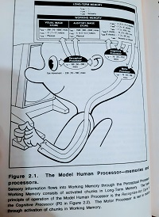
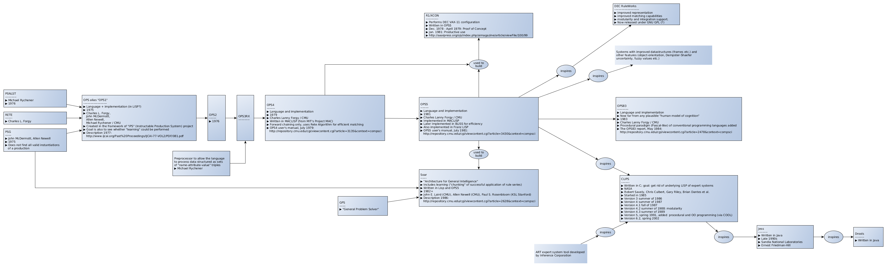
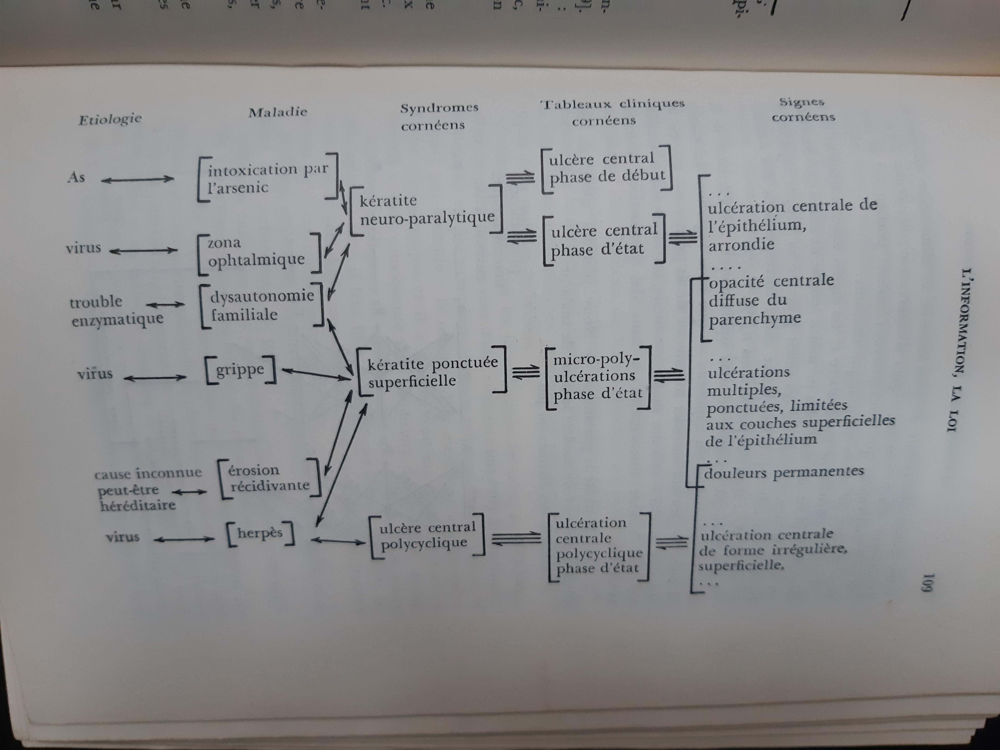
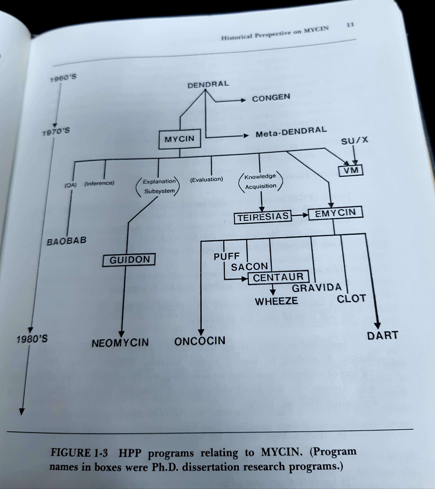
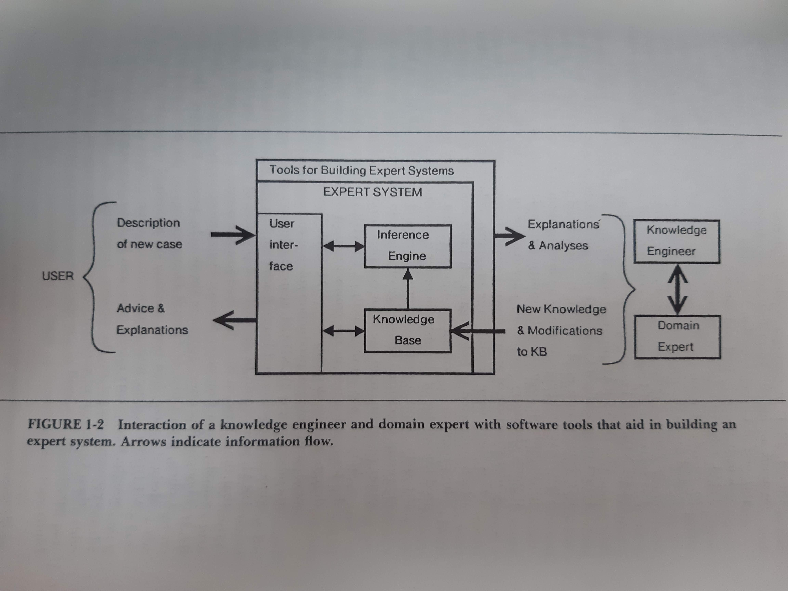
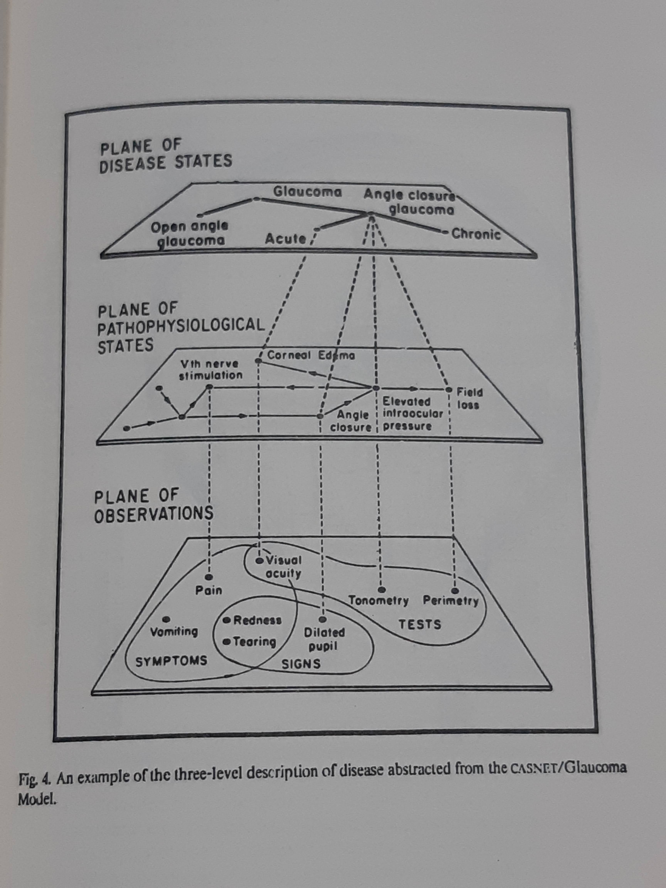
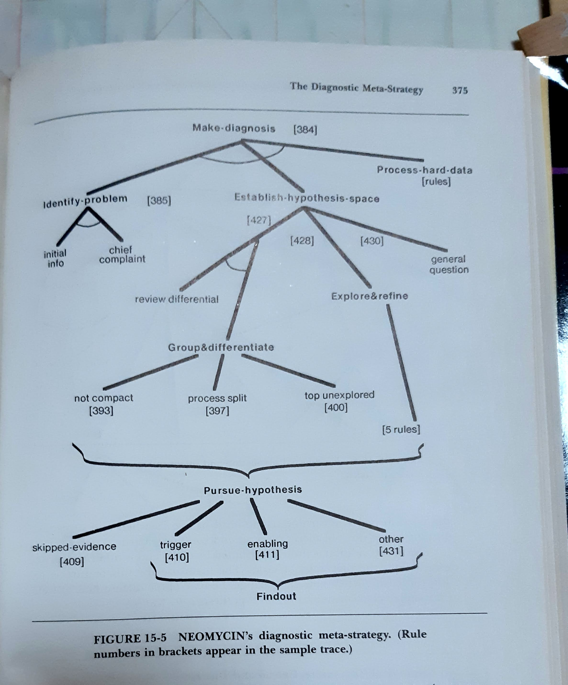
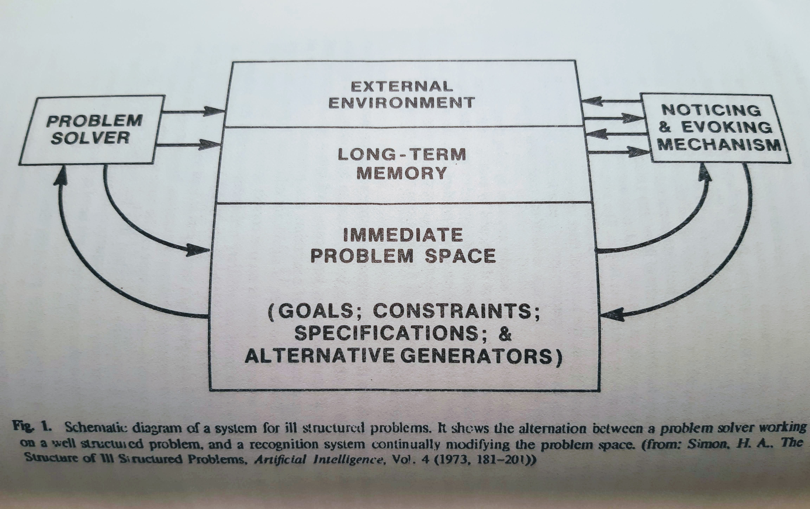

A Functional Perspective on the NXP Architecture
Version 1.0
Table of Contents
- 1. Introduction
- 2. How we got here
- 3. A simplistic functional language, funx
- 4. Extending for NXP-style inferencing, funxp
- 5. Compiling funxp
- 6. An Emacs-based client
- 7. Bibliography
- 8. Index
1 Introduction
Most of the ideas expressed in the historical series of computer programs, termed NXP Architecture in this paper, were originally designed at the apex of one of the recurring return in the 30-year cycle in the Artificial Intelligence (AI) debate,
1.1 A Dominant View, Symbolic Artificial Intelligence
Progressively in the late 70s and early 80s, the symbolic thread triumphed as the dominant paradigm of AI research. In 1984 for instance, at the climax of this cycle, early efforts to transfer research work to industrial applications were so introduced:
Artificial Intelligence is the subfield of computer science concerned with symbolic reasoning and problem-solving. […] Knowledge Engineering is the process of incorporating symbolic knowledge into computer systems to solve problems normally requiring human attention and intelligence.1
These computer systems incorporating symbolic knowledge became known as Expert Systems and were all the rage, as industrial applications of AI, from the early eighties to the mid-nineties.
This somewhat restricted, to contemporary eyes, view of AI as a “subfield of computer science” geared towards augmenting traditional programs with symbolic knowledge was, however, perfectly in line with the precepts of the symbolic thread of AI research, established at the Dartmouth Summer Research Project on Artificial Intelligence in 1956. Out of the variety of research theses on “thinking machines” in the 1950s, diversely known as cybernetics, automata theory or complex information processing, stemmed out the original characteristics of the symbolic approach to AI: the importance of (mathematical) logic in high-level cognitive processes, and the prevalence of symbols in all aspects of cognition.
The defining assumption, the physical symbol system hypothesis, was the philosophical perspective on AI assessed by Allen Newell and Herbert A. Simon:
A physical symbol system has the necessary and sufficient means for general intelligent action,
With symbols, structures come naturally as list of symbols, and cognitive processes are understood as controlled by signal and symbol structures in working memory, i.e. arbitrary list structures in an extensive database-like system, sometimes called goals, On the one hand, note the implicit analogy with the Turing machine model of a computer2, where perceptions are turned into symbols in memory, feeding a processor which elects further actions, operating changes in the environment. And, on the other hand, delineating further this analogy, the notions of symbol and list from which LISP, and all its functional programming languages descendants in computer science, was derived, and moreover by the same contributors to the seminal Dartmouth workshop3.
While the seminal ideas for the NXP Architecture stemmed from a very early interest in what would be now termed learning concepts (see 2), they were readily influenced and refined by the dominant view at the time, all the more so that they matured in the cultural environment of Carnegie-Mellon University (CMU), namely of its Computer Science and Robotics Institute departments, from 1982 to 1984.
1.2 Production Systems and Rule-based Systems
With the symbolic AI view then firmly entrenched, both in computer science and in the emerging philosophy of the mind, the idea of rule-based systems, in which knowledge is conventionally represented as rules operating on symbols (following the Physical Symbol System hypothesis) became an active applied research program.

Figure 1: Model Human Processor in The Psychology of Human-computer Interaction, by Card, Newell, Moran (1983). The brain-as-a-computer metaphor in the philosophy of the mind, all quantified!
Although rule-based computation was originally used for formal and systems purposes , researchers in Artificial Intelligence (AI) found that the same methodology was also useful for modeling a wide variety of sophisticated tasks.
The production system was one of those happy events, though in minor key, that historians of science often talk about: a rather well-prepared formalism, sitting in wait for a scientific mission. Production systems have a long and diverse history. Their use in symbolic logic starts with Post, from whom the name is taken. They also show up as Markov algorithms, Their use in linguistics, where they are also called rewrite rules, dates from Chomsky, As with many other notions in computer science, they really entered into wide currency when they became operationalized in programming languages, first in string manipulation systems and in compiler translation languages, Thus they were at hand when the data on human problem solving finally took a form (Problem Behavior Graphs) that pointed to their usefulness,
As commented on by Lenat4, there were many design constraints present in the classical formal rule based systems. Many of these details were preserved in the AI production rule based programs (e.g., forcing all state information into a single string of tokens). But there were also many changes. The whole notion of “what a rule system really is” changed from an effective problem statement to a tendency to solve problems in a particular way. One typical corollary of this change of view was that instead of no external inputs whatsoever, there was now a presumption of some “environment” which supplied new entries into the token sequence.
So over the 1970s symbolic AI research mostly worked with rule systems (RS), a collection of condition-action rules, together with associated data structures (DS; also called memories, or working memory) which the rules may inspect and alter. There must also be a policy for interpretation: detecting and firing relevant rules (also known as recognize-act-cycle, later called inference engine). “Intelligence is ten million rules,” Lenat pronounced in 1988, such were the times.
1.2.1 Neo-classical Rule System Architecture
In ten loose principles according to Lenat and Harris:
- Principle of Simple Memories
- One or two uniform data structures define sufficient memories for a rule system to read from and write into. The format for entries In these structures is both uncomplicated and unchanging.
- Principle of Simple DS Accesses
- The primitive read and write operations are as simple and low-level as possible; typically they are simply a membership or equality test type of read, and an insert-new-element or set-value type of write. More complicated, algorithmic operations on the memories are not available to the rules.
- Principle of Isolated DS Elements
- Elements of the uniform DS cannot point to (parts of) other elements. This follows from the preceding principle: If we aren’t allowed to chase pointers, there may as well not be any.
- Principle of Continuous Attention
- In addition to the one or two simple data structures, there may be an external environment which continuously inserts stimuli into the DS. The interleaving of stimuli and internally generated symbols is managed quite trivially: (a) The stimuli are simply inserted into the DS as new or changed elements; (b) Each rule is so small and quick that no “interruption” mechanism is necessary. The interpreter may ignore any suddenly-added stimulus until the current rule finishes executing. The RS may be viewed as “continuously” attending to the environment.
- Principle of Opaque Rules
- Rules need not have a format inspectable by other rules, but rather can be coded in whatever way is convenient for the programmer and the rule interpreter; i.e., the set of rules is not treated as one of the RSs data structures. E.g., the condition parts of rules may be barred from fully analyzing the set of productions, and the action parts of rules may not be allowed to operate on existing rules.
- Principle of Simple Rules
- Rules consist of a left- and a right-hand side which are quite elementary. The left hand side (lhs, situation characterization, IF-part, condition) is typically a pattern-match composed with a primitive DS read access, and the right hand side (rhs, consequence, THEN-part, action) is also simply a primitive DS write access. There is no need for sophisticated bundles of DS accesses on either side of a rule. Thus several extra rules should be preferred to a single rule with several actions.
- Principle of Encoding by Coupled Rules
- A collection of interrelated rules is used to accomplish each subtask; i.e., wherever a subroutine would be used in a procedural programming language. For example, programming an iteration may require many rules “coupled” by writing and reading special (Le., otherwise meaningless) loop control notes in the data structure.
- Principle of Knowledge as Rules
- All knowledge of substance should be, can : be, and is represented as rules. This includes all non-trivial domain dependent information. The role of the DS is just to hold simple descriptive information, intermediate control state messages, recent stimuli from the environment, etc.
- Principle of Simple Interpretation
- The topmost control flow in the RS is via a simple rule interpreter. After a rule fires, it is essential that any rule in the system may potentially be the next one to fire (i.e., it is forbidden to locate a set of relevant rules and fire them off in sequence). When the rhs of a rule is executed, it can (and frequently will) drastically alter the situation that determined which rules were relevant.
- Principle of Closure
- The representations allowed by (1-9) are sufficient and appropriate for organizing all the kinds of knowledge needed for tasks for which a given RS is designed.
Notice the common theme: the adequacy of simplicity in all dimensions.
Medical consultation as a task environment.
1.2.2 Rules are put to many uses in inference
In contrast, defending that thinking may be more than computing5, Peter Kugel refers to Peirce’s definitions of:
- Rule
- a general principle that is applied to specific examples. The analogy to a program representing an principle that computers apply to certain inputs still stands.
- Case
- what the rule is applied to. This would be the input in the computer program metaphor, or the working memory in the rule system.
- Result
- what is produced by the rule application. This would be the output in the computer program metaphor, or the effects of RHS actions on the working memory in a rule system.
The overall analogy suggests that deduction might be modeled as evaluating a rule against case, which was often done at that time. While in logic, axiomatic theories are often thought as recursively enumerable (i.e. partially computable) theorems, here it is suggested that induction works from case and result to rule. And indeed, in the heydays of symbolic AI, Machine Learning research went this way, years before the massive connectionist architecture of today’s ML took up the prize.
| DEDUCTION | |
|---|---|
| Given: | Rule: All men are mortal |
| Given: | Case: (SOCRATES IS-A MAN) |
| Concludes: | Result: (SOCRATES IS-A MORTAL) |
| INDUCTION | |
|---|---|
| Given: | Case: (SOCRATES IS-A MAN) |
| Given: | Result: (SOCRATES IS-A MORTAL) |
| Concludes: | Rule: All men are mortal |
| ABDUCTION | |
|---|---|
| Given: | Rule: All men are mortal |
| Given: | Result: (SOCRATES IS-A MORTAL) |
| Concludes: | Case: (SOCRATES IS-A MAN) |
Peirce’s types of inference are related, but not identical to, notions of forward-chaining and backward-chaining in rule systems, which are later explored in the FUNXP architecture.
In the CMU culture, at the time, the “neo-classical” view defined by Lenat was prevalent. Its incarnation in the series of production systems languages, OPS, culminated in OPS 5 (and later OPS 83). OPS 5 was made instantly famous by the then well-known significant success of a first industrial application: R1/XCON, an expert system to configure VAX Systems at DEC6.

Figure 2: The OPS series of production systems languages. Source: Wikipedia, CC0, https://en.wikipedia.org/w/index.php?curid=44903117
In OPS-based expert systems, creation/update/deletion operations on the working memory were propagated into a graph, compiled from the rules. These changes triggered LHSes, concurrently selecting rules which could be fired at each step. The recognize-act-cycle parameters would drive picking up the rule(s) to fire, executing their RHSes and cycling back to rule selection7.
The numerous active developments, at CMU, about and around OPS 5 added to the design mix of the NXP Architecture. They helped contrasting and focusing on the proper interaction of backward chaining and forward chaining, that guide the logical process of rule evaluation.
1.2.3 Rules with and without symbols
Interestingly, the formidable development of neurosciences and computational neurosciences in the last decades throws a new contemporary light on the venerable rule system thread of symbolic AI. Based on mathematical-logic and computer-science inspired metaphors, the rule system ended up as a model of a fundamental human cognitive faculty: the capacity for cognitive control, the ability to behave in accord with rules, goals or intentions (all problematic notions to the philosophy of mind, by the way) – even when this runs counter to reflexive or other compelling competing responses.
A hallmark of this cognitive control is its remarkable flexibility. Novel tasks can be performed with very little additional experience (a problematic issue, in contrast, for the current – 2021 – crop of massive Deep Learning connectionist architectures). This was unfalteringly explored over several decades by, among others, Allen Newell, then
Today’s neurosciences tell us that this ability appears to depend on the prefrontal cortex (PFC). This capacity, however, emerges only slowly over a protracted period through late adolescence. The rule system abstractly models flexible cognitive control at the psychological level, in terms of symbol processing computations that all support arbitrary variable bindings. A symbol may stand for anything, as computations only rely on the syntactic properties of such symbols3. It remains unclear, however, whether or how this model relates to the increasingly growing body of knowledge about the neural mechanisms underlying cognitive control and namely the functioning of the PFC.
At the biological level, many models were developed of cognitive control relying on the maintenance of rule-like representations in the PFC. But questions about how these representations develop and why this development should be so long are still unanswered, Leveraging today’s successes in massive connectionism, as is apparent in Deep Learning, neural networks models of the PFC can be trained to show development of rule-like task representations, which support generalization of task performance to novel environments. A perfect, modern instance of the proper treatment of connectionism, the approach pioneered more than thirty years ago that sought to set up “check and balances” strategies against an all-encompassing symbolic AI,
1.3 Clinical Consultation as a Task Environment
The third historical ingredient in the context for the original design in the NXP Architectures were some seminal applications of symbolic AI to Medicine, and more specifically to clinical consultation.
1.3.1 Old and Long History of Medical Applications of AI
In 1956, Dr François Paycha presented a paper at the Premier Congrès International De Cybernétique, in Namur, on “Cybernétique de la consultation”,
Inspired by the Weaver-Shannon information theory and Norbert Wiener’s Cybernetics, “Consultation Cybernetics” is a full-fledged theory of heuristics in medical diagnosis. Useful abstractions in the logical process of reaching a positive diagnosis are precisely defined in an inclusive sequence of sets of signs/symptoms, syndrome, clinical pictures, and finally diseases, joined by typed links, which may be directed or not. The “working memory” was then represented as a graph:

Figure 3: Medical Consultation: a view from cybernetician Dr François Paycha, in 1956.
Paycha suggests that “diagnosis machines” are needed to confront the increasingly growing volume of medical knowledge, already escaping the MD’s comprehension. And diagnosis being only the first in a series of steps leading to prescription, and a healthy patient, the need is amplified by the increasing volume of therapeutics information.
The graph is traversed by the consultation exploratory process in three consecutive phases, termed semiological, differential, and positive diagnosis, respectively. Based on a form of ternary logic, true, false, and unknown, the first two phases range from signs/symptoms up to candidate diseases through syndromes and their related clinical pictures. Then a directed ternary-logic evaluation of the candidates is performed in the last phase, reaching one, or possibly several, positive diagnoses.
The theory articulates a data-driven phase, reminiscent of or heralding forward-chaining in rule systems, which Paycha insists is almost reflexive in the MD’s mind – thus also evocative of so-called spontaneous computations models studied twenty years later in computer science, – with a form of deductive backward-chaining goal and subgoal evaluation.
All the basic building blocks of AI in Medicine (AIM) were in place.
1.3.2 There Were Many, Many Inspiring Accomplishments in AIM
The early ground-breaking AIM systems were developed by inspired pioneers at Stanford, Pittsburgh University, Rutgers, MIT and a few other innovative centers of AI research in the seventies. These were designed by collaborative teams where computer scientists, MDs and hospitals all worked together, against a background of more traditional approaches to the use of computer in clinical medicine, :
- Flowchart
- or clinical algorithm which encodes, in principle, the sequences of actions a good clinician would perform for any one of some population of patients.
- Data Bases
- (in two separate words, at the time) enabling, when data is properly captured, the matching of cases to a large body of previous cases.
- Application of Decision Theory
- a mathematical theory of decision making under uncertainty, rooted in operations research.
which were all thought as lacking the flexibility required for full-fledged usable clinical systems.
This crop of first generation programs proved over time to be inspiring accomplishments for later research:
- CASNET
- developed at Rutgers University by Kulikowski, in its major instanciation as a diagnostic and therapeutic program for glaucoma and related diseases of the eye. EXPERT, a somewhat simpler descendant was more widely applied mostly in the analysis of thyroid disorders and rheumatology. It identified the fundamental issue of causality as essential in the diagnostic and used causal-associational networks as the core knowledge representation.
- MYCIN
- or as described by their developers Buchanan and Shortliffe, the series of MYCIN Experiments, at Stanford University, originally applied in the diagnosis and treatment of bacterial infections of the blood. Rules famously represent knowledge in MYCIN, often associated with so called certainty factors.
- Digitalis Therapy Advisor
- developed at MIT by Szolovits et al., where knowledge is captured in Minsky’s frames model he suggested for memory structures.
- INTERNIST
- developed at the University of Pittsburgh by Pople, an ambitious program for diagnosis in general internal medicine. Special emphasis on the distinction between problem formulation and problem solving, a characteristic of this system, was further refined in CADUCEUS, a follow-on system in the mid-80s.
- PIP
- designed, at MIT, to emulate clinicians in the evaluation of patients with renal disease. It merged facts about the patient with knowledge from a database to develop a hypothesis about what was afflicting the patient. More complex cases were addressed by ABEL (by Patil), a program for the diagnosis, and eventual treatment, of acid/base and electrolyte disturbances.
Started in 1972 at Stanford University, MYCIN is a pioneering computer-based consultation system designed to assist physicians in the diagnosis of and therapy selection for patients with bacterial infections. In addition to the consultation system itself, MYCIN contains an explanation system which can answer simple English questions in order to justify its advice or educate the user. The system’s knowledge is encoded in the form of some 350 production rules which embody the clinical decision criteria of infectious disease experts. Much of MYCIN’s power derives from the modular, highly stylized nature of these decision rules, enabling the system to dissect its own reasoning and allowing easy modification of the knowledge base,

Figure 4: The MYCIN Experiments at Stanford’s SUMEX-AIM.
Stanford’s MYCIN and its descendants, such as EMYCIN8, a domain independent version of MYCIN for use in other domain and applications, and ONCOCIN9, an oncology protocol management system designed to assist physicians in the treatment of cancer patients, had a long-lasting influence on the whole program of AI research and precipitated the commercial the early eighties charge towards industrial and commercial applications of expert systems.
Predominantly based on backward-chaining, in contrast to the design of CMU’s OPS series of production system languages, MYCIN nonetheless fixed the major features and definitions of expert systems, and expert system shells as domain-independent knowledge engineering software tools.
In 1983, Ed Shortliffe reflected on the impact of MYCIN on AI:
You mentioned earlier that MYCIN is often cited as sort of the fundamental expert system – which may be overstating the case for MYCIN. DENDRAL is certainly the earliest really well-accepted expert system, although it has some different elements . It’s not interactive for large groups of people in quite the same way that MYCIN is intended to be . But ideas that grew out of MYCIN and DENDRAL and other medical efforts such as the CASNET project at Rutgers, the INTERNIST project at the University of Pittsburgh, work at MIT on a program called PIP (the Present Illness Program), and subsequent work at MIT on explanation and more recently causal reasoning and multi-level causal descriptions, have contributed greatly to the state of the art in expert systems and, in turn, to the demonstration of these ideas.
MYCIN made popular constructs like rule interpreters (shells) and rule compilers (in this case to decision trees) and certainty factors; main control structure as goal-directed backward chaining of rules10; interactivity by asking questions to the user, modularity of rules which could be edited individually; explanation capabilities. (Note that early expert systems faced the same critic, which are today addressed to ML Deep Learning neural nets, of demanding explanation for the conclusions it reached in order to be accepted as a legitimate tool by a community of practitioners.)

Figure 5: The Expert System Architecture industry standard in the late eighties.
Its influence was certainly important on the NXP Architecture as its first demonstration knowledge bases, for research purposes, were all from the medical consultation task environment Closer to the CMU campus, INTERNIST-I was a broad-based computer-assisted diagnostic tool developed in the early 1970s at the University of Pittsburgh as an educational experiment11.
In hindsight, the NXP Architecture design strongly benefited from the accomplishments of this opening chapter of AIM, 12 These stepping stones were retrospectively described in 2015 by Pr. Casimir Kulikowski, whose doctoral dissertation, in 1970, described a pattern recognition model which has been successfully used to simulate a doctor’s diagnostic process:
During the first half of the 1970’s, several groups working on computational models for clinical decision-making and problem-solving had developed the MYCIN rule-based system for infectious disease therapy assistance at Stanford, the CASNET Causal Associational NETwork model for consultation in glaucoma, at Rutgers, the DIALOG (later renamed INTERNIST) system for differential diagnosis in internal medicine at Pittsburgh, and the PIP (Present Illness Program) for diagnosis-driven acquisition of clinical data at MIT and Tufts. These had been inspired by AI approaches that departed from the earlier general problem solving search paradigm characteristic of AI since its inception and still holding sway into the 1970’s, and focused on capturing domain- and problem-specific strategies for solving complex sequences of expert biomedical interpretations and actions. These included the rule-based and hypothesis-list approaches used in the DENDRAL Project, which influenced MYCIN, as well as experimental, instructional, interview-based, and cognitive approaches to the analysis of clinical problem solving, and the causal-taxonomic representation of underlying processes of disease. While earlier computer models for medical decision-making were predominantly statistical or algorithmic, the new AI approaches developed structured representations of specific clinical domain knowledge over which a general inference engine could reason with a variety of heuristics, and provide advice or suggestions to the consulting user.

Figure 6: Strategies in CASNET glaucoma consultation program, developed at Rutgers (1971-8) based on causal association networks.
Closing the loop with the early cybernetics endeavors in Medicine of Dr Paycha, the state of the art of AI systems for medical consultation was summarized in computer programs such as NEOMYCIN. Revisiting the “MYCIN experiments” over close to twenty years, and reconfiguring the system for education purposes – the ultimate use INTERNIST-I was also put to at about the same time – the following diagram was published:

Figure 7: Strategies in MYCIN-inspired medical consultation computer programs.
Note the similarities with Dr Paycha’s investigations of 1956, allowing for changes in terminology and some refinements on the pedagogical aims of the classification.
2 How we got here
The functional perspective motivates revisiting – once more – the design of the NXP Architecture. This section elaborates on what is expected of functionalism (as in the philosophy of mind) or of functional languages when it comes to the nature and implementation of the NXP Architecture.
2.1 NXP Archeology and vestigial software artifacts
The seminal ideas, presented in context in the 1 slowly matured over time. Several computer programs, designed as scientific experiments on a computer model of the mind, in typical Newell-Simon style, testify to the long trek in the design space that brought us here and now.
- PHILIPS
- Associative memory; exploration of clustering in Machine Learning (1979-80).
- NCLOSE
- An AIM inference engine with a focus on differential diagnosis in medical consultation (1982-3). Also Rappaport, A., Closed Search: an hypothesis evaluator, Unpublished manuscript, Robotics Institute, Carnegie-Mellon University, (1982).
- KAA
- Derived from PHILIPS, ML by clustering on the inference paths of the NCLOSE performances (1982-3).
- SCS
- A knowledge management tool for the KAS/PROSPECTOR rule model, written in OPS 5 (1982-3). Also Mulsant, B., Servan-Schreiber, D. A Gentle Introduction to Artificial Intelligence in Medicine. Unpublished manuscript, Robotics Institute, Carnegie-Mellon University, (1982).
- PROSYL
- Nclose-inspired algorithm for many-objects many-patterns matching à la RETE (1983).
- AMBER
- Generalizing previous programs: discovery and clustering of sequential observations for prediction (1984).
- NEXPERT, later NEXPERT OBJECT
- Industry-standard expert system development environment on microcomputers, workstations and mainframes, with pioneering GUI (1985-)
Recent, and mostly unpublished, research work explored further implementations and design ideas about the NXP Architecture:
- Theoretical models
- Expressing heuristics in continuation passing style (CPS) Monadic Style Control Constructs for Inference Systems (2002), Memory As A Monadic Control Construct In Problem-Solving (2004).
- NClosEmacs
- A Nclose-inspired rule/hypothesis evaluator written in Emacs-Lisp with a Machine Learning (ML) extension exploring bagging and boosting (2008-10).
- LLVM-based implementation
- Based on CLANG, CouchDB and a minimal GUI client in GTK+, a NXP Architecture based on CPS constructs (2010).
- Micro-Service implementation
- Written in Javascript and based on Node, Moleculer, the progressive microservice framework, a demonstration prototype with a React GUI (2018) for the Web.
2.2 Meanwhile functionalism thrives in the philosophy of mind
In the philosophy of mind, functionalism is generally considered one of the major proposals that have been offered as solutions to the mind/body problem13. Functionalism says that mental states are constituted by their causal relations to one another and to sensory inputs and behavioral outputs. Functionalism is one of the major theoretical developments of Twentieth Century analytic philosophy, and provides the conceptual underpinnings of much work in cognitive science.
Ned Block lists three sources for functionalism:
- Putnam and Fodor saw mental states in terms of an empirical computational theory of the mind3. (A critical assumption in the symbolic v. connectionism recurring debate, where both sides appeal to a form of computation.)
- Smart’s “topic neutral” analyses led Armstrong and Lewis to a functionalist analysis of mental concepts. (In which causality is emphasized14.)
- Wittgenstein’s idea of meaning as use led to a version of functionalism as a theory of meaning, further developed by Sellars and later Harman.
Leveraging the mind-as-computer metaphor (see 1.2.3), Block introduces the function relevant to mind by way of the Turing machine. What is a state of a Turing machine? Its nature is entirely relational: the state is completely defined by its relation with other states in the transition table. And so:
- According to functionalism, the nature of a mental state is just like the nature of an automaton state: constituted by its relations to other states and to inputs and outputs;
- Hence mental states can be totally characterized in terms that involve only logico-mathematical language and terms for input signals and behavioral outputs. (A syntactic view of characterizing mental processes.)
- Mental states, however, do have other (e.g. physical) properties. These other properties are said to be the realizations of the functional properties. So, although functionalism characterizes the mental in non-mental terms, it does so only by quantifying over realizations of mental states (which would not have delighted behaviorists).
- Of course then, one functional state can be realized in different ways. (This, we saw, is a principle in the symbolic AI approach which abstracts the underlying substrate for mental processes.)
- Conversely, one physical state can realize different functional states in different machines, including the brain.
Functionalism then permeates cognitive science and AI15 since inception. It hints at the the falsity of physicalism: if a creature without a brain can think, thinking can’t be a brain state5.
The issue of realization is not without difficulty, however. Should we consider it in empirical psychology and functionalism aims at capturing mental concepts (as ordinarily understood); should we consider it in common sense psychology, and functionalism aims rather at fixing the extension of mental terms. (Reminiscent of distinctly–and non equivalently–defining a function in the mathematical sense, by extension, or by intension.) These variants of functionalism in turn spell different problems in relating mental states to causation, or to qualia (phenomenal states like the look of red)16.
2.3 And functional programming languages in computer science
As mentioned before, the roots of the symbolic AI and functional programming languages are historically intertwined, dating back to the Dartmouth workshop of 1956. And so, at different times in its history, AI was just equated with LISP programs and LISP-Machines, LISP being the original and archetype functional programming language. In computer science, functional programming is a programming paradigm where programs are constructed by applying and composing functions. (In this respect, it shares some principles with versions of functionalism in the philosophy of mind glossed over in previous section.)
It is a declarative programming paradigm in which function definitions are trees of expressions that each return a value, rather than a sequence of imperative statements which change the state of the program. In this respect, it naturally blends with declarative knowledge, rule systems.
As an exploration path for this research project, we planned to revisit this blending of symbolic processes perspectives, viewed as mental processes and viewed as computer programs expressed in functional languages, leading to an original (re)implementation of the NXP Architecture.
2.3.1 Evaluation, Compilation and Abstract Machines
A solid trend in programming language design has been the use of operational semantics to define the semantics of a programming language. In this respect, Abstract machines have been effectively used as intermediate and low-level architectures suitable for supporting serious implementations of a wide variety of programming languages, including imperative, functional, and logic programming languages. Abstract machines are distinguished from operational semantics by having simple and direct algorithmic implementations that can employ efficient data structures. On the other hand, abstract machines are distinguished from lower-level, machine-code implementations because typically the former uses pattern matching for manipulating data while the latter explicitly addresses the notions of structure sharing, storage allocation, and register allocation17.
In the above characterization of abstract machines their use as an intermediate language for compilation is an essential feature. As a result the implementation of a programming language consists of two stages. The implementation of the compiler and the implementation of the abstract machine18. These two consecutive stages are the path we followed to build this project of NXP Architecture with a functional perspective. Both the abstract machine implementation and the original compiler implementation are in Emacs-Lisp.
In writing the compiler, care was exercised in order to only peruse the subset of Emacs-Lisp that maps directly into the primitives of the functional language, a simple variant of LISP called funx. By doing so, the compiler may compile itself to the funx abstract machine, so that further developments no longer require the original compiler source.
Additionally, the abstract machine can be ported to other programming languages with minimal effort–C, Python or Javascript being interesting targets for such ports.
Along the development of computer science abstract machines were designed and developed for imperative programming languages (Algol Object Code, UCSD P-Machine) later evolving towards abstract machines for object-oriented programming languages (Smalltalk-80, Self, Java VM). Abstract machines also abound in string processing languages19.
Abstract machines were also created for functional programming languages. The first abstract machines for functional languages, such as the SECD, and FAM, defined strict evaluation, also known as eager or call-by-value evaluation, in which function arguments are evaluated before the call, and exactly once. More recently, most work has focused on lazy (or call-by-need) evaluation, in which function arguments are evaluated only if needed, and at most once.
Central concepts in abstract machines for functional languages include:
- A stack
- represents the context of a nested computation. It may hold the intermediate results of pending computations, activation records of active function invocations, active exception handlers, etc. The stack is sometimes used also for storing arguments to be passed to functions.
- An environment
- maps program variables to their values.
- A control list
- a sequence of controls to be executed later, representing the rest of the calculation, also called a continuation. Each control is simply an operation that transforms the state of the abstract machine into a new state (in perfect Turing style).
- A closure
- is used to represent a function as a value. It typically consists of a code address (for the function body) and an environment (binding the free variables of the function body)–more on closures later.
- A heap (dump)
- stores the data of the computation. Abstract machines usually abstract away from the details of memory management, and thus include instructions for allocating data structures in the heap, but not for freeing them; the heap is assumed to be unlimited.
- A garbage collector
- supports the illusion that the heap is unlimited; it occasionally reclaims unreachable heap space and makes it available for allocation of new objects.
The SECD machine (1964) was designed by Landin for call-by-value evaluation of the pure lambda calculus, Although there are many evolved abstract machines later developed for increasingly richer and more expressive higher-function programming languages20, we chose to focus the initial design of the NXP Architecture Abstract Machine on this seminal model. The machine derives its name from the components of its state: an evaluation stack S, an environment E, a control C holding the instructions to execute, and a dump D holding a continuation (i.e., a description of what must be done next) and other data.
#+CINDEX Lispkit
Lispkit Lisp is a lexically scoped, purely functional subset of Lisp (“Pure Lisp”) developed as a testbed for functional programming concepts, It was first used for early experimentation with lazy evaluation. An SECD machine-based implementation (written in an ALGOL variant) was published by the developer Peter Henderson in 1976,
Henderson later published a reference book on functional programming languages and the SECD machine, from which the design of this experimental NXP Architecture abstract machine heavily borrows. (Misunderstandings and bugs are, however, all mine!)
2.3.2 Strict v. Lazy Evaluation
Two fundamental questions to the functional programming language implementor are:
- How are function values, data values and unevaluated expressions represented?
- How is function application performed?
Large chapters of Henderson’s book detail answers to these questions in the context of the SECD model. As appropriate for a functional programming language, every expression in funx is represented as a symbolic expression, or sexp.
Note that an intepreter for a functional language like funx can be defined as a function itself eval :: apply( <F-SEXP>, <ARGS> ) which basically expects a well-formed sexp, with a function value, and a list of its arguments. During interpretation, each well-formed sub-expression is identified and evaluated (often more than once). So the interpreter turns out to be a case analysis of the well-formed sub-expressions of a program.
Applying a function to its arguments is the core binding operation in funx and other functional programming languages. Every expression in funx is evaluated with respect to an environment. An environment is just that, this association between arguments and values (which are simply sexps). In the situation where the functional expression refers to variables introduced, not as arguments to the application, but locally–one also talks about variables defined outside the scope of the function–the environment needs to be augmented with the bindings for these variables prior to evaluation. This is the role of the let primitive in funx which introduces blocks with additional bindings.
(let ((foo (lambda (x) (add y (mul (quote 2) x)))) (y (quote 4)) ) (foo (quote 3)) )
In the example above, this block mechanism is used to introduce and name a new function in funx. The name foo is bound to a function value (a functional sexp). The function value is called a closure, a composite sexp which contains both the sexp for the function–here the lambda expression–and the environment defining the values of the variables (in this instance, y) and arguments (x) to the function. Finally the application sexp (foo (quote 3)) is evaluated in an environment listing the binding of foo to this closure and the binding of x to the constant 3. The evaluation produces the expected value 10.
Note that in funx there is a single let primitive which plays the roles of both let and letrec in Lispkit. The block introduced by let may contain mutually recursive definitions.
In Cardelli’s FAM, closure are represented as the text of the function and the value of its free variables. The text of a function is in itself a rather complex structure; it contains a sequence of instructions in some suitable machine language, and a set of literals which may be strings or other text cells. From a different perspective, in Henderson’s SECD-based Lispkit, a function value is a suspended computation (promise to perform the computation when the value is applied to some arguments). The most compact way to represent a closure is as a block of static code (shared by all dynamic instances of the value), together with the values of its free variables.
In terms of implementation, the representation of closure could be:
- A block of heap-allocated storage with one pointer to code followed by pointers to variables. The environment pointer points to the closure and variables are accessed by calls relative to this pointer. (Directly or by chains of pointers, with an impact on GC.)
- The Three Instruction Machine (TIM) takes another interesting position21. Instead of representing a closure by a single pointer, it represents a closure by a pair of a code pointer and a pointer to a heap-allocated frame. The frame, which is a vector of code-pointer/frame-pointer pairs, gives the values of the free variables of the closure, and may be shared between many closures.
In this implementation in Emacs-Lisp, environments are simply represented as association lists Closure are lists constituted of the list of arguments to the function, the control list (i.e. compiled code, since we are targeting a compiler) for the functional sexp, and the environment.
This closure infrastructure in the SECD machine is also critical in implementing eager evaluation or lazy evaluation we alluded to above. In eager, or strict, evaluation, sexps are evaluated immediately as they are mentioned (call-by-value). In a non-strict language evaluation, values are passed to functions or stored in data structures in unevaluated form, and only evaluated when their value is actually required (call-by-need). There is a long and rich literature on strict v. non strict functional languages, eager v. lazy (sometimes even lenient) interpreters and compilers:
Like function values, these unevaluated forms capture a delayed computation, and can be represented by a closure in the same way as a function value. Following a broadly used terminology, we call this particular sort of closure a thunk, or a promise, a term which goes back to the early Algol implementations of call-by-name. When the value of the promise is required, the promise is forced, through naive reduction, cell model (flag) or self-updating model implementation, so that if the value is later required the value of this original evaluation is returned instead of being reevaluated.
So using the same closure concept as above, sexp evaluations can be delayed (lazy) or forced without changing the sexp itself. In eager evaluation, sexps are never delayed (or always forced). Compilers from the Lisp tradition usually compile function application as follows: evaluate the function, evaluate the argument, and apply the function value to the argument. When a known function is being applied (as is often the case, especially in Lisp), the “evaluate the function” part becomes trivial. This model for function application, which we called earlier the eval-apply model, is invariably used by compilers for strict languages (eg Lisp, Hope, SML and the SECD machine in Landin’s and in Henderson’s papers). It is also used in some implementations of non-strict languages, except that of course only the function is evaluated before the application (eg the ABC machine22, and the <n,G>-machine23).
In contrast, compilers based on lazy graph reduction treat function application as follows: push the argument on an evaluation stack, and tail-call (or enter) the function. There is no “return” when the evaluation of the function is complete. We call this the push-enter model.
Henderson gives a precise definition of lazy evaluation, based on the delay and force operations, in a purely functional program (usually without any delays or forces). The rules are written as a series of program transformations:
- delay all arguments to (user-defined) functions
- delay all arguments to
cons - delay all definitions in
letblocks - repeatedly force all arguments to primitive functions other than
cons - repeatedly force the test sexp in conditional expressions
- repeatedly force the function in a function application.
The power of lazy evaluation also allows the processing of potentially infinite structures and the proper interpretation of mutually recursive equations defined in let blocks. It also apply to the proper execution of a functional program viewed as a network of communicating processes, This turns functional languages into particularly natural forms of expressions for certain types of parallelism (and in particular, data driven, which is particularly useful in rule systems.
The next section of this manual will detail a SECD abstract machine, derived from Lispkit, with a strict compiler for the funx functional programming language. Henderson’s transformations we be used however to design the funxp NXP-related extensions to the language as they require lazy compilation.
2.3.3 I/O and GUI
Two chapters in Henderson’s book explain how input-output for the Lispkit LISP variant is implemented on typical hardware. Depending on the underlying implementation hardware, mapping of the abstract machine may vary and primitives for the input and output of sexps are correspondingly required.
The choice of Emacs-Lisp as an implementation programming language (and execution model) frees us from these developments for the moment. Sexps are naturally parsed and printed out by the Emacs-Lisp machinery, and the abstract funx machine is mapped almost directly to the underlying Emacs interpreter. A follow on to this project would be to port the abstract machine to another environment (such as Javascript with Node.js), involving a new mapping of the abstract machine to the concrete one.
Consequently well-formed sexps for the funx language will be expressed here in (a subset of) Emacs-Lisp symbolic expressions.
Similarly, Emacs being the overall environment for this abstract machine its graphical user interfaces, and user experience, would primarily be text-based. The result funxp is both a programming language and an interactive programming environment, for expert systems. It embeds NCLOSE, an earlier inference engine, in a simple–even simplistic–functional programming language called funx (functional expressions).
3 A simplistic functional language, funx
This section is devoted to the exploration of the semantics of a simplified functional programming language, called funx, in which we later plan to embed a rule system, resulting in funxp, an implementation of the NXP Architecture with a functional perspective.
Moreover, we are interested in developing a compiler for funx and funxp. Hence after presenting the language itself, we describe the SECD-based abstract machine for the language and its implementation in Emacs-Lisp.
3.1 FUNX a functional language, pure and simplistic
Concrete funx programs are (Emacs-Lisp) sexps as per our design choices of implementation language and environment. The following sexps, where s is any sexp, x are atoms and e well-formed expressions, are all the well-formed expressions in funx:
x- a variable.
(quote s)- a constant sexp.
(add e1 e2),(sub e1 e2),(mul e1 e2),(div e1 e2),(rem e1 e2)- arithmetic expressions (whose arguments are usually quoted when constant–a difference with Emacs-Lisp).
(eq e1 e2),(leq e1 e2)- equality and comparison tests, returns a
funxboolean, special atoms*T*and*F*.
(car e),(cdr e),(cons e1 e2)- cell structure operations.
(atom e)- tests for atomicity, returns a
funxboolean, special atoms*T*and*F*.
(if e1 e2 e3)- conditional form, where
e1should evaluate to afunxboolean, special atoms*T*and*F*.
(lambda (x1 ... xN) e)- function definition, returns a function value.
(e e1 e2 ... eN)- function application, applies function
eto arguments’ valueseI.
(let ((x1 e1) ... (xN eN)) e)- recursive block, evaluates sexp
ein the environment bindings(x1 e1) ... (xN eN).
These are the funx built-in functions supported by the abstract machine described in the next section. We will also see how this limited set of functions is nonetheless powerful enough to express its own compilers, eager and lazy. (It is also sufficient to express its own interpreter, should we want to skip the abstract machine step altogether.)
As an example of a program expressed in funx, we state the perennial factorial example and show below a possible sexp to compute 3!.
(let ((fac (lambda (n) (if (eq n (quote 1)) (quote 1) (mul n (fac (sub (quote 1) n)))))) ) (fac (quote 3)) )
Variables are bound in lambda and let expressions. When their definitions are called their associated argument (in lambda-sexps) or local block definition (in let-sexps) are eagerly evaluated and new bindings are pushed into the environment. On exit of the function call or of the block, the variables, and their bindings in the environment are deleted. (Note that let in funxp is called letrec in Henderson’s book.)
Note that using the environment both as an association list and as a stack simplifies the management of variables with identical names. The value retrieved is always the one bound in the most local binding, which is the first found when searching the environment.
Constants are always quoted–a point of departure from the Emacs-Lisp convention of not quoting numbers. Operators are defined as prefix as is common in LISP so that 2 + 2 is expressed as (add (quote 2) (quote 2)).
Denotational semantics for Lispkit-Lisp and funx into the set category can be readily developed, leading to provably correct interpreters24. The classic difficulty is the semantics of the let recursive block operator. (The non-recursive let, as in Henderson’s Lispkit, is simply reduced to an equivalent lambda expression, (let (x e) e-body) being (lambda (x) e-body) applied to argument e, and presents no difficulty.) The specificity of recursive block is that each variable is evaluated in an environment that binds all the variables in the let block, so that this augmented environment is a form of fixed point in the operation of binding variables.
3.2 FUNX SECD Abstract Machine
In this section we borrow freely from Henderson’s book for the description of the SECD machine, The SECD machine, invented in its original form by Landin, derives its name from the designation of its four principal components, or registers.
- stack
- used to hold values of expressions during computation.
- environment
- used to hold bindings of variables to values during computation.
- control list
- used to hold the abstract machine program being executed.
- dump
- used as a general stack to hold values of other registers, particularly when calling functions
All registers hold sexps that usually are lists of sexps. The entire state of the SECD machine is given by giving the content of its four registers. The program of a SECD machine is also a sexp, a list of control-sexps usually atomic, which are read sequentially. Each individual control transforms the state of the SECD machine, so that each is an instruction for a machine transition, written as:
s e c d -> s' e' c' d'
The control list constitutes the program of the abstract machine and tells it how to move from state to state, following the sequence of machine transitions each individual control in the list denotes25. (Control lists are also called continuations in this info file.)
For instance, and with a bit of heads-on over the next section, let us look at the control list for simple arithmetics:
(mul (quote 2) (quote 3))
The expected control list for the above funx sexp would be:
(LDC 2 LDC 3 MUL STOP)
It introduces three controls:
- LDC
- Pushes the following constant sexp on the stack.
- MUL
- Pops values from the stack twice, multiplies them and pushes back the result on the stack.
- STOP
- Stops the abstract machine, leaving the state untouched.
And the natural execution of this program with initially nulled stack, environment and dump registers would look like the following sequence of transitions:
| Sequence | s | e | c | d |
|---|---|---|---|---|
| 0 | nil | nil | (LDC 2 LDC 3 MUL STOP) | nil |
| 1 | (2) | nil | (LDC 3 MUL STOP) | nil |
| 2 | (3 2) | nil | (MUL STOP) | nil |
| 3 | (6) | nil | (STOP) | nil |
with the result nicely sitting on top of the stack when the machine finally stops.
3.2.1 Operational semantics
The operational semantics of the abstract machine is then defined by each control and its associated machine transition. The mnemonics for the controls in the abstract machine are as follows:
- LD
- push variable’s value on the stack
- LDC
- push constant on the stack
- LDF
- push function-plus-environment closure on the stack
- ADD
- apply arithmetic operator to top two stack values, push result back
- SUB
- apply arithmetic operator to top two stack values, push result back
- MUL
- apply arithmetic operator to top two stack values, push result back
- DIV
- apply arithmetic operator to top two stack values, push result back
- REM
- apply arithmetic operator to top two stack values, push result back
- CAR
- replace top of stack by its head
- CDR
- replace top of stack by its tail
- CONS
- pop top two stack values, push back cons of values
- ATOM
- test for atomicity, replace top of stack by boolean
*T*,*F*
- EQ
- test for equality of popped top two stack values, push boolean result
- LEQ
- test for lower-than popped top two stack values, push boolean result
- SEL
- select control for
ifsexps, followed by two arguments in the control list: sexp if top of stack is*T*, and sexp if top of stack is*F*
- JOIN
- terminates a sexp in SEL control, and proceeds to the next control after SEL in list
- AP
- apply function on top of stack, push result back
- RTN
- terminates a function definition in LDF argument, push the top of the stack as the result of the function application
- DUM
- opens a recursive
letblock
- RAP
- recursive apply, evaluate sexp in a recursive
letblock
In order to facilitate the presentation we grouped the controls in several categories:
- ld-group
The load group of controls usually push a value on the stack.
s e c d s e (LDC sexp . c) d (sexp . s) e c d s e (LD x . c ) d (( locatex e) . se c d s e (LDF f-sexp . c) d ((f-sexp e) . s) e c d In the transition table above,
locateis a environment utility function which given a variable name and an environment returns the value bound to the variable in the environment, ornilif no such binding is found. Note thatsexpdenotes any sexp, andf-sexpdenotes a function sexp (i.e. a list which head is a list of named arguments, and tail is the control list for the body of the function), so that theLDFcontrol pushes a closure (function + environment) on the stack. - arith-group
The machine transitions for the arithmetic group all have the same form:
s e c d (a b . s) e (<OP> . c) d (<a OP b> . s) e c d - ops-group
This group contains the basic operations on values in
funx.s e c d ;; Lists ((a . b) s) e (CAR . c) d (a . s) e c d ((a . b) s) e (CDR . c) d (b . s) e c d (a b s) e (CONS . c) d ((a . b) s) e c d ;; Tests (a s) e (ATOM . c) d ([*T*,*F*] s) e c d (a b s) e (EQ . c) d ([*T*,*F*] s) e c d (a b s) e (LEQ . c) d ([*T*,*F*] s) e c d ;; IF control ([*T*,*F*] s) e (SEL cT cF . c) d s e [cT, cF] (c d) s e (JOIN) (c d) s e c d Notes:
funxprovides only simple primitive tests: atomicity, equality (implemented here as LISP’sEQUAL) and comparison of numbers. The conditional control is implemented by pushing the continuation on the dump register and entering the appropriate control list branch; theJOINcontrol always terminates each branch, and reinstalls the continuation from the dump register. (There are other ways to implement the conditional control, of course.) - fun-group
This group implements the function application and lambda-function definitions.
s e c d ;; Application (f-sexp vals s) e (AP c) d nil ((args-f-sexp . vals) e-f-sexp) cl-f-sexp (s e c d) (ret-val) e’ (RTN) (s e c d) (ret-val s) e c d ;; letblocks e (DUM c) d s (OMEGA e) c d (f-sexp vals s) (OMEGA e) (RAP c) d nil rplacacl-f-sexp (s e c d) ((args-f-sexp . vals) e-f-sexp) Notes: the
APcontrol works in association with theLDFwhich loads a closure on the stack. It pushes the state to the dump register and enters the control list in the closure, within an environment resulting from pushing the association list of function arguments and values from the stack to the environment stored in the closure. TheRTNcontrol, which always terminates a control list in a closure, reinstates the machine state from the dump register and pushes the result (top of the stack) of the function application to the recovered stack.- args-f-sexp
- extracts the argument names from the closure sexp
- vals
- popped values from the stack, on for each function argument in order
- e-f-sexp
- extracts the environment from the closure sexp
- cl-f-sexp
- extracts the control list from the closure sexp
- OMEGA
- a literal constant used as placeholder for the
carof the environment which is altered by, - rplaca
- replaces OMEGA in its argument by a pointer the association list of function arguments and values from the stack, and returns a pointer to itself (this implements the recursive nature of the
letblock)
The
DUMcontrol opens aletrecursive block which expects aLDF <closure> RAPto terminate it, where the environment in the closure will be altered in-place by pushing the variable definitions in theletstatement.As an example, the factorial function in
funxfrom above:(let ((fac (lambda (n) (if (eq n (quote 1)) (quote 1) (mul n (fac (sub (quote 1) n)))))) ) (fac (quote 3)) )
(DUM LDF ((n) LDC 1 LD n EQ SEL (LDC 1 JOIN) (LD n LDC 1 SUB LD fac AP LD n MUL JOIN) RTN) LDF ((fac) LDC 3 LD fac AP RTN) RAP STOP)
3.2.2 Running the funx SECD Abstract Machine
The executive for the SECD Abstract Machine is found in the secd-exec.el file. It is a simple automaton that moves the state of the machine to the next one according to the values of its registers s, e, c, and d. At each step the transition is looked up into the representation of last section’s transition tables, and the transformation of state indicated is performed until the special control STOP is found.
Steps through the control list control, with initial stack, environment and dump as provided and stops at STOP control, returning the state of the stopped machine as the list (s e c d).
(secd-cycle nil nil '(LDC 2 LDC 3 MUL STOP) nil)
=> ((6) nil (STOP) nil)
3.2.3 A funx strict compiler
The strict compiler translates funx sexps to SECD Abstract Machine control lists. It is strict, or eager, in the sense that in function applications, arguments are evaluated first, in left-to-right-order, and pushed on the stack; the function code is pushed on the stack and the application control, AP or RAP is executed. This is also known as call-by-value.
Of course, other strategies are possible. For instance, rather than evaluating the arguments first, which might not be used in the body of the function thus wasting precious computing resources, the translation could substitute the evaluation code for the arguments in the body of the function. This is the call-by-name convention rule. (Note that using call-by-name, functions may be defined even for arguments which computation would not terminate in call-by-value evaluation.)
Following Henderson’s book, the strict compiler implements the following translation of sexps:
funx sexp |
SECD Control List |
|---|---|
| T v | LD v |
| T (quote s) | LDC s |
| T (add s1 s2) | T s2 T s1 ADD |
| T (leq s1 s2) | T s2 T s1 LEQ |
| T (atom s) | T s ATOM |
| T (car s) | T s CAR |
| T (cdr s) | T s CDR |
| T (cons s1 s2) | T s2 T s1 CONS |
| T (if s1 s2 s3) | T s1 SEL (T s2 JOIN) (T s3 JOIN) |
| T (lambda (v1 … vn) s) | LDF ((v1 … vn) T s RTN) |
| T (let ((v1 s1) … (vn sn)) s) | DUM T sn … T s1 LDF ((v1 … vn) T s RTN) RAP |
| T (s s1 … sn) | T sn … T s1 T s AP |
where v, s1 ... sn are variable names, the value of which will be found in the environment register of the SECD machine; and s, s1 ... sn are well-formed funxp sexps. (The other arithmetic sexps are translated like add.)
Note that there are minor differences with the translation in Henderson’s book, related to the implementation of the environment and to the single let sexp, which does note distinguishes between recursive and non-recursive blocks.
In Emacs-Lisp the strict compiler is invoked by:
-- Function secd-comp--comp expression names controls
expression is the funx sexp to translate; names is a register of variable names defined in expression: this is unused in the strict compiler, but will be used in the NXP lazy variant of the compiler; controls is the recursively built list of controls.
(secd-comp--comp '(mul (quote 2) (quote 3)) nil '(STOP)) => (LD 3 LD 2 MUL STOP)
- Another perennial example, compiling the compiler
As a footnote to this section, we could not skip the “compile the compiler” exercise! The simple
funxfunctional language is expressive enough to implement the translation to SECD Abstract Machine control lists. The previous example is found in theexamples/comp3.lspfile, which once compiled with the Emacs-Lispsecd-comp--compfunction above produces the following control list, with thefunxpsexp'(mul (quote 2) (quote 3))to be compiled loaded (as a constant,LDC) on the stack.(DUM LDF ((elist) LD nil LD elist EQ SEL (LD nil JOIN) (LD elist CDR LD secd-comp--vars AP LD elist CAR CAR CONS JOIN) RTN) LDF ((elist n c) LD nil LD elist EQ SEL (LD c JOIN) (LD c LD n LD elist CAR CDR CAR LD secd-comp--comp AP LD n LD elist CDR LD secd-comp--list AP JOIN) RTN) LDF ((e n c) LD e ATOM SEL (LD c LD e CONS LDC LD CONS JOIN) (LDC car LD e CAR EQ SEL (LD c LDC CAR CONS LD n LD e CDR CAR LD secd-comp--comp AP JOIN) (LDC cdr LD e CAR EQ SEL (LD c LDC CDR CONS LD n LD e CDR CAR LD secd-comp--comp AP JOIN) (LDC atom LD e CAR EQ SEL (LD c LDC ATOM CONS LD n LD e CDR CAR LD secd-comp--comp AP JOIN) (LDC quote LD e CAR EQ SEL (LD c LD e CDR CAR CONS LDC LDC CONS JOIN) (LDC cons LD e CAR EQ SEL (LD c LDC CONS CONS LD n LD e CDR CAR LD secd-comp--comp AP LD n LD e CDR CDR CAR LD secd-comp--comp AP JOIN) (LDC eq LD e CAR EQ SEL (LD c LDC EQ CONS LD n LD e CDR CAR LD secd-comp--comp AP LD n LD e CDR CDR CAR LD secd-comp--comp AP JOIN) (LDC leq LD e CAR EQ SEL (LD c LDC LEQ CONS LD n LD e CDR CAR LD secd-comp--comp AP LD n LD e CDR CDR CAR LD secd-comp--comp AP JOIN) (LDC add LD e CAR EQ SEL (LD c LDC ADD CONS LD n LD e CDR CAR LD secd-comp--comp AP LD n LD e CDR CDR CAR LD secd-comp--comp AP JOIN) (LDC sub LD e CAR EQ SEL (LD c LDC SUB CONS LD n LD e CDR CAR LD secd-comp--comp AP LD n LD e CDR CDR CAR LD secd-comp--comp AP JOIN) (LDC mul LD e CAR EQ SEL (LD c LDC MUL CONS LD n LD e CDR CAR LD secd-comp--comp AP LD n LD e CDR CDR CAR LD secd-comp--comp AP JOIN) (LDC div LD e CAR EQ SEL (LD c LDC DIV CONS LD n LD e CDR CAR LD secd-comp--comp AP LD n LD e CDR CDR CAR LD secd-comp--comp AP JOIN) (LDC rem LD e CAR EQ SEL (LD c LDC REM CONS LD n LD e CDR CAR LD secd-comp--comp AP LD n LD e CDR CDR CAR LD secd-comp--comp AP JOIN) (LDC if LD e CAR EQ SEL (LDC (JOIN) LD n LD e CDR CDR CDR CAR LD secd-comp--comp AP LDC (JOIN) LD n LD e CDR CDR CAR LD secd-comp--comp AP LDF ((cont-t cont-f) LD c LD cont-f CONS LD cont-t CONS LDC SEL CONS LD n LD e CDR CAR LD secd-comp--comp AP RTN) AP JOIN) (LDC lambda LD e CAR EQ SEL (LD c LDC (RTN) LD n LD e CDR CDR CAR LD secd-comp--comp AP LD e CDR CAR CONS CONS LDC LDF CONS JOIN) (LDC let LD e CAR EQ SEL (LD c LDC RAP CONS LDC (RTN) LD n LD e CDR CDR CAR LD secd-comp--comp AP LD e CDR CAR LD secd-comp--vars AP CONS CONS LDC LDF CONS LD n LD e CDR CAR LD secd-comp--list AP LDC DUM CONS JOIN) (LD c LDC AP CONS LD n LD e CAR LD secd-comp--comp AP LD n LD e CDR LD secd-comp--args AP JOIN) JOIN) JOIN) JOIN) JOIN) JOIN) JOIN) JOIN) JOIN) JOIN) JOIN) JOIN) JOIN) JOIN) JOIN) JOIN) RTN) LDF ((secd-comp--comp secd-comp--list secd-comp--vars) LD nil LD nil LDC (mul '2 '3) LD secd-comp--comp AP RTN) RAP STOP)
Running the SECD machine on this control list then produces the expected:
=> (LD 3 LD 2 MUL STOP)
which run again through the SECD machine will finally output
6!
4 Extending for NXP-style inferencing, funxp
In order to build the NXP Architecture on top of the funx functional programming language, we will first extend the features of the language with Henderson’s delay-force mechanism for delayed evaluations of sexps.
While delayed evaluations expose some of the parallel nature of functional programming languages, where sexps are viewed as separate threads in a network of communicating processes, we will not explore this further in the current implementations26.
Similarly, while delayed evaluations make it possible to write functional programs which process infinite structures, e.g. infinite lists, this is a feature we will not explore in the following sections.
The NXP Architecture uses delayed evaluations for all evaluations of facts, conditions, rules and hypotheses defined in NXP knowledge bases. The proper order of execution of these delayed evaluations, based on one or more heuristics, constitutes the control structure of an interactive session, also called the agenda. In the current implementation, the agenda is simply represented by the global control list of the underlying SECD Machine.
In order to emphasize delayed evaluations, we call the functional language funx augmented with delayed evaluations: funxp.
4.1 Promises are delayed evaluations
Delayed evaluations lead to lazy evaluation of sexps, compared to typical call-by-value eager evaluations It is usually introduced explicitly in augmenting the well-formed expression with explicit delaying and forcing evaluation, so that (delay e) and (force e) are well-formed sexps when e is a well-formed sexp, and (force (delay e)) has the same value as e.
The value of (delay e) is a closure-like structure, we call a promise. It incorporates a representation of the expression–its compiled control list in the compiler output–and the environment in which to be evaluated.
Note that one interpretation of the delay/force could readily be implemented in funx without extension. Making an expression e into a function with no parameter (lambda () e) has indeed the effect of postponing the evaluation until it is actually called with no argument, ((lambda () e)). This interpretation however would cause the function to be evaluated twice if called twice as opposed to once only, as in (let ((val (lambda () e))) (cons (val) (val))).
An alternative interpretation would be that the value of the delayed function is represented by a closure containing e which, when forced, is replaced by the value resulting from the evaluation of e. The next forcing would return this previous evaluation result rather than trigger a new evaluation27. The funx control set is thus expanded to make the latter interpretation precise:
funxp feature |
Control lists |
|---|---|
| T (delay s) | LDE T s UPD |
| T (force s) | T s AP0 |
| T NXP-s | LDP NXP-s |
where NXP-s designates an NXP special sexp (fact, condition, rule, action or hypothesis), and introducing new controls:
- LDE
- load the following promise on stack
- LDP
- load the named promise from the environment
- AP0
- evaluate the promise on top of the stack, stores the result of the evaluation in the promise, or if already evaluated, use that value
- UPD
- terminates a promise definition (in LDE argument)
4.1.1 lazy-group
Transitions for the new controls are as follows:
| s | e | c | d |
|---|---|---|---|
| s | e | (LDE c . c) | d |
| ((PROMISE c e) . s) | e | c | d |
| s | e | (LDP x . c ) | d |
((locate x e) . s |
e | c | d |
| ((v e) . s) | e | (AP0 . c) | d |
| (v . s) | e | c | d |
| ((PROMISE c e) . s) | e’ | (AP0 . c’) | d |
| nil | e | c | (((PROMISE c e) . s) e’ c’ d) |
| (v) | e | (UPD) | (((PROMISE c e) . s) e’ c’ d) |
| (v . s) | e’ | c’ | d |
| and (PROMISE c e) => (v e) | |||
Note that the promise is distinct from a standard closure, having the reserved keyword PROMISE when delayed. The AP0 control first checks for this keyword and evaluates the closure as usual if delayed, or returns the result of the previous evaluation if present. (Hence the two lines in the previous table.)
The UPD control has an additional side-effect which is to update the promise with the result of the evaluation for further reference. Here we rely on the notion than only one update is necessary to alter the promise in place. (Implementations should probably never copy promises and systematically use pointers to premises to alleviate the consistency checks.) Updates affect all the subsequent accesses to the promise.
4.1.2 Lazy evaluation
With this feature added in funxp the precise definition of a lazy evaluator (or compiler for that matter) is obtained by considering a strict evaluator (or compiler) and making the following changes throughout the entire program:
- delay all arguments to user-defined function sexps.
- delay both arguments to
cons, - delay all definitions in
letrecursive blocks. - repeatedly force all arguments to primitives other than
cons(e.g.car…) - repeatedly force the test in
ifsexps. - repeatedly force the function in applications.
These can be written as simple program transformations performed just before evaluation or compilation of funxp sexps.
4.2 Rules and Knowledge Bases
We are now ready to introduce the NXP Architecture specific functional expressions to complete the specification of funxp. All the new well-formed sexps are related to the core novel issues brought forward in rule systems: the issue of interactivity with the user, and more generally with external sources of data required by the inference process on the one hand, and the issue of the control structure(s) in problem-solving–a notoriously complex question 28.
This section focuses on the new constructs introduced by the NXP Architecture rule system. It also provides some motivations for their introduction and intended use in problem representation and problem-solving performance. The next section explains the funxp compiler which translate these constructs into executable control lists on the SECD Abstract Machine.
The general rule sexp in funxp is as follows:
-- Function rule hypo lhs [rhs context]
A rule sexp where hypo is an hypothesis, or goal; lhs, for left-hand side (LHS) is a list of conditions; optional rhs, for right-hand side (RHS) is a list of actions; and optional context is a list of properties.
where:
- hypothesis
- also called a goal, or a hypo, is a symbol which conventionally evaluates to true (
*T*) when all the conditions in the left-hand side are matched and to false (*F*) if any one (or more) of the conditions in the left-hand side does not match. - lhs
- a list of conditions.
- condition
- a sexp which is a
funxpexpression that evaluates to true (*T*) or false (*F*) exclusively. - rhs
- a list of actions.
- action
- a sexp exclusively of the form
(set s sexp)wheresis a symbol andsexpa well-formedfunxpexpression that calculates the value assigned tos. - context
- is a property written as
:context sexpwheresexpa well-formedfunxpexpression, usually a list of symbols.
The motivation for this compact form is to express that a rule says that when all its conditions in the LHS are true (matched by values of data in working memory), the rule fires, becomes true, and the hypothesis becomes true.
A knowledge base is a list of rule sexps.
Note that within a knowledge base, a given hypothesis may appear in several rules. By convention, during evaluation if all of these rules evaluate to false (and consequently none is fired) the hypothesis becomes false.
Hence a hypo turns out true if at least one of its rules in the knowledge base is true (and fired); it turns out false if all of its rules in the knowledge base are evaluated to false (hence none fired); and remains unknown if only some of its rules have been evaluated, and to false.
4.2.1 Interactive user interfaces
In rule systems, see 1.2, rules are matched against data which resides in working memory. In the current implementation we opt for mapping the working memory into the environment register of the SECD Abstract Machine, and designates each datum simply by a symbol in funxp.
Values for these data may be computed, evaluated, or deduced by the rule system as the problem-solving progresses. Values might also be required, or collected from data sources external to the rule system itself, including from the user. The I/O channel between the rule system and its peripheral systems involves, in its generality, issues of sync/async control in communications. The current implementation simplifies the latter by considering only one data source, the user, and consequently one extension to the set of well-formed funxp sexps, the question. We will see that the management of the question is quite generic and may be easily adapted to other data source, e.g. relational databases or Web Services queries.
The newly introduced well-formed sexp is: (question s) where s is a symbol, which naturally translates to “What is the value of s?” (Later, we show how to customize text prompts for the text-based user interface in Emacs.)
This new sexp also introduces the new convention that evaluation stops at a question, waiting for an answer from the user to resume the evaluation at some later point in time. This makes the evaluation by the rule system interactive, as several questions might be asked in the process of running the system. The full cycle of interaction with the rule system, until it terminates, is called a session. Sessions are reminiscent of the famous protocols studied by Newell and Simon as a method for eliciting knowledge from human experts.
In the current implementation, the user being the single data source, any symbol, the required value of which is not present in working memory nor can be computed or evaluated by the rule system, is deemed collectible from external data sources, i.e. the user, and a corresponding question is output and evaluation stops.
Note that since more than one data collection for different rules could be going on simultaneously from an evaluation perspective, there could logically be several pending questions at any given output. In the current implementation, as mentioned early, we did not address issues of parallelism which could gracefully handle the synchronization of inference threads within the framework of the funxp delayed evaluations. Instead we will introduce NXP-specific control structures to captures the proper sequencing of interaction with the user–an important criterion of usability of expert systems,
Note also that this mechanism may easily be extended to other data sources by introducing similar well-formed expressions, possibly arranged in a stack where failure to find the value of the required symbol in the top of the stack data source cause popping it out and trying the next one, addressing the question to the user at a last resort.
4.2.2 Goal-driven evaluation
In goal-driven evaluation, also known as backward chaining, the process starts from an unevaluated hypothesis and collects all its rules in the knowledge base in no particular order. Should one the rule already be evaluated to *T*–remember that rules are, like hypotheses, promises and may have been evaluated prior to the current focus–the hypothesis is evaluated to *T* without further work. If not, the collected rules are evaluated in sequence.
Note that, rules being mapped to promises, if a rule in this sequence has been evaluated prior to the current focus (and necessarily to *F*), it is not re-evaluated, in line with the delay-force mechanism in funxp.
The sequential evaluation stops at the first *T* rule value, setting the hypothesis to *T*. When all the rules in the sequence end up evaluated to *F*, the hypothesis is set accordingly to *F*.
This sequential hypothesis evaluation is a logical OR of the values of the rules in the knowledge base, which stops at the first logical true value encountered.
- Evaluating and firing rules
In turn, rule evaluation is performed by a sequential evaluation of the conditions in its LHS, following a logical
AND. It stops at the first*F*value for a condition and sets the rule value to*F*; when all the conditions evaluate to*T*, the rule value is set to*T*.When a rule is evaluated to
*T*during the sequential process its RHS is immediately executed before proceeding to the next rule in sequence. The rule is said to be fired.The list of actions in the RHS is evaluated in sequence. In the current implementation only one type of action is present: assignment of a value to a data.
(set v s)
where
vis a variable name, andsa well-formedfunxpsexp to compute the value assigned tov. The assignment may trigger forward-chaining consequences, e.g. posting conditions in other rules on the agenda for later evaluations.Note that evaluation of a RHS sexp and an action sexp individually is always
nil. It is ignored by the computation thread. - Evaluating conditions on subgoals
Conditions are general
funxpboolean sexps. In addition,funxpoffers two boolean forms for conditions:(H) (not H) ;; `not' also applies to boolean sexps (not s)
where
His another hypothesis (andsany other boolean sexp).When the first two forms are encountered in condition evaluation, the current focus is pushed and the hypothesis
His evaluated. (This is similar to a procedure call in imperative programming languages, or an application infunxpasHis a promise.) In the AI established jargon this is the chaining, here in backward mode as it goes from goal to subgoal.Note that with this convention for chaining from conditions to hypothesis, goals are considered as data, hence also reside in working memory during a session.
- Evaluating conditions on data
In contrast, when evaluating conditions any required data which is not an hypothesis is asked interactively from the user by default in an interactive session.
If a variable
vis required, for evaluating a condition, which is not an hypothesis but for which there are some rules in the knowledge base that may set its value in their RHS, a heuristics option in the NXP Architecture exists to trigger backward chaining fromvthrough the RHS of these rules (rather than asking the user in that instance).-- Variable secd--kb-option-backward-chaining-rhs
When switched to true, search for and evaluate rules with RHS setting data required in condition evaluation before asking the user. Set to
nilby default. - Suggesting hypotheses in interactive sessions
During interactive sessions, hypotheses can be added for later evaluation by posting them to the agenda (also known as suggesting in the NXP Architecture).
4.2.3 Event-driven evaluation
In event-driven, or data-driven evaluation, data values are stored in working memory, either from a rule RHS action, from an external data source or a calling external process, of by the user assigning values to some of the data (also known as volunteering information in the NXP Architecture).
- Forward Chaining
In the forward-chaining process this value-change events trigger evaluation, or reevaluation of LHS conditions of rules requiring the changed variable. Changing the value of a variable, once an interactive session is terminated, to cause reevaluation of goals is also known as what-if queries in the NXP Architecture.
(Re)evaluated conditions, in turn, cause (re)evaluation of rules, still with the
ANDlogical connective described above. (Re)evaluated, may then fire, and in turn cause (re)evaluation of hypotheses. If the hypothesis is itself required in a LHS condition, the forward-chaining proceeds with the new focus of attention. Forward-chaining then proceeds generally from data to subgoals, to goals, in a chain of logical deductions. - Gating
The NXP Architecture provides a heuristics option to control the forward-chaining deductive step from rule to hypothesis. The rationale for the control is to focus the problem-solving process on confirmed hypotheses or subgoals only, rather than expanding its focus to rules not immediately confirmed by the data at hand. This heuristics is called gating in the NXP Architecture. It applies to forward-chaining and restricts the deductive step from rule to hypothesis to those
*T*-valued rules only.secd--kb-option-forward-chaining-gate
When true, the deductive step or forward chaining from a rule to its hypothesis is taken only if the rule is found
*T*(gating on). When false, the deductive step is always taken whatever the value of the rule (gating off). The default is gating on.
4.2.4 Heuristics design space
Backward- and forward-chaining by no means exhaust the possibilities and nuances of control in problem-solving. It is even debatable that computing is all there is to thinking 5, both from the standpoint of the philosophy of mind and from the standpoint of computer science.
Rules may be put to many uses in representing the process of problem-solving, 1.2.2, and together with the various chaining and options already mentioned help explore a large portion of the heuristics design space. In pioneering early AIM systems, other representation schemes were also tested, most notably, association and weighted association (also known as certainty factors) relations between data and/or goals,
The hypothesis generation phase is a well-identified and delimited step in the problem-solving task at large29. While rules can be used for hypothesis generation, particularly in forward-chaining mode, AI research studied many alternative mechanisms very early on. (Dr Paycha’s address to the 1956 First International Congress of Cybernetics already explained medical hypothesis generation in medical consultation by associational links from signs, to syndromes, to diseases, for instance, ) The early NCLOSE system had a separate initial step of hypothesis generation before switching to a “deductive” mode to logically prove or disprove candidate hypotheses,

Figure 8: Schematic diagram of a system for ill-structured problems. It shows the alternation between a problem solver working on a well-structured problem, and a recognition system continually modifying the problem space. (From Simon, 1973)
Association links, when used as evoking or noticing, help guide the problem-solving process when confronting ill-structured problems, an analysis brought forward by Herbert Simon. The NXP Architecture provides a generic implementation with the notion of context which can be customized to serve specific heuristics.
In order to extend the reach of the NXP Architecture in the heuristics design space, the rule model explicitly supports a form of associational linking, called context, or context links or evocation links. Each rule sexp may be decorated by an optional :context property which is a list of symbols, as in this example:
(rule OBSTRUCTIVE-AIRWAY-DISEASE
((leq SLOPE-F50-FVC 32)
(leq 22 SLOPE-F50-FVC))
:context '(EMPHYSEMA ASTHMA BRONCHITIS))
where the main hypothesis OBSTRUCTIVE-AIRWAY-DISEASE may be evocative of one of the following EMPHYSEMA, ASTHMA, or BRONCHITIS without necessarily, at this stage of the problem-solving process, a logical or deductive step being involved.
The context links are collected for each hypothesis in the knowledge base by merging, without duplicates, the lists of context symbols found in each rule. A simple graph is then constituted by considering two hypotheses adjacent if they share one or more symbols in their respective contexts. Given hypothesis H we called evoked hypotheses all the hypotheses in this graph that can be reached by following edges, starting from H.
When the evaluation of a hypothesis terminates, all the evoked hypotheses are posted to the end of the agenda for later evaluation, once the backward-/forward-chaining processes reach quiescence. Using context links, the focus of attention of the problem-solving task can switch from one area of the problem-space to another, even when there appears to be no formal logical step represented by rules between both. This control of the focus of attention may find several task-dependent uses: differential diagnosis exploration, inductive links, taxonomic links, frame-slot constructs in frame-based knowledge representations, and so forth.
Evocation is controlled by a heuristics option:
-- Variable secd--kb-option-context
When switched to true, triggers evocation from each hypothesis just evaluated. Set to nil by default.
Association can be customized by defining custom context elements. The default heuristics is a context defined as a list of symbols, with equality of symbols used to determined the adjacency relation between hypotheses. This can be changed by defining the heuristics option:
-- Variable secd--kb-option-context-compare
When non nil, defines a comparison function to be used when building the adjacency graph of hypotheses from context links. Default value is nil: assumes context lists are lists of symbols and use EQUAL for comparison.
5 Compiling funxp
What seemed to be missing was the desire to compile.
— Don De Lillo, The Players
We chose to implement the knowledge base compiler to directly output control lists for a SECD Machine embedded within a NXP Executive which runs the machine according to user commands. An alternative would be to extend the simple variant of LISP with knowledge base related well-formed sexps and use the lazy compiler. Instead, we add a set of well-defined NXP-specific controls to the SECD Machine, and their transitions, to directly capture the rule sexps into controls lists, and rely on an external program, the NXP Executive, to implement the heuristics mentioned in the previous section.
Implementing the NXP Architecture from the functional perspective provided by funxp then requires:
- extending the SECD repertoire of control operators to accommodate hypotheses, rules, conditions, actions, and variables; as well as I/O to the user and computing environment (here Emacs);
- embedding the SECD automaton into a larger executive that orchestrates the basic processes of backward-chaining, forward-chaining and evocation;
- embedding the
funx(eager) compiler into a knowledge-base compiler that produces a complete state for the augmented SECD Abstract Machine to process.
In the current implementation, the embedding of the SECD executive and the augmented executive itself are both written in Emacs-Lisp, like the implementation of the SECD Abstract Machine. For now, it remains an interesting avenue of research to port the machine and the NXP executive to other programming languages and environments, including funx itself.
The same remark applies to the knowledge base compiler, implemented in Emacs-Lisp in the current implementation. The section on compiling the compiler shows that it might be interesting to port the NXP knowledge base compiler to funx with some extra work. This “native” compiler could then leverage any of the above SECD + NXP Executive program.
To introduce a formal note, we plan to implement the following:
-- Function secd-comp--kb-knowcess env goals [s var val]
This runs the NXP SECD Machine on the state (implicitly) provided as arguments.
env is the NXP environment produced by the knowledge base compiler.
goals is a list of initial hypotheses to evaluate. This will be JIT compiled and added to the initially empty control list. These hypotheses were suggested before running the session.
Optional s is an initial stack (usually left at nil).
Optional var and val are lists of variables and values, known initially before running the session. They may have been volunteered before running the session, for instance.
-- Function secd-comp--kb2env kb
Compiles a knowlege base, i.e. a list of rule sexps into an environment for the augmented SECD Abstract Machine. This environment is passed as a first argument to the knowcess command.
In a diagram:
S S
+------------+
| |
Knowledge Base ----------| COMPILER | --------> E E
| |
+------------+ +--------------+
| NXP + SECD |
| MACHINE |
+--------------+
Initial
Suggest ---------------------------------> C C
Volunteer
D D
Initial Final
State State
5.1 Mapping NXP to SECD
In the current implementation, the first design choice is to map all the NXP-level entities defined above (hypothesis, rule, condition and action, variable) to promises in the functional programming language funxp. The rationale is that each individual component of rules and knowledge bases can be understood as a functional sexp which evaluation is delayed until needed by the problem-solving process.
This design choice has several consequences:
- The NXP knowledge base compiler produces control lists for every individual entity found in the rule sexps.
- Since the promises are evaluated on a call-by-need basis, and the initial focus of attention is provided by the user (through one or several suggest/volunteer commands before running an interactive session), the promises are to be stored in the environment until called by the evaluation process. The output of the knowledge base compiler is therefore an environment ready to be consumed by the NXP SECD Machine.
- The starting control list of the NXP SECD Machine will consist of the calls required to evaluate the suggested hypotheses in the environment produced by the compiler, and augmented by the optional volunteer initial commands.
- The stack and dump registers of the NXP SECD Machine would usually be empty in the initial state.
Once the NXP SECD Machine stops (hitting the STOP control), the stack will show the values of the suggested hypotheses at start, and the environment will be updated with all the evaluations of hypotheses, rules, conditions and variables processed during the interactive session.
This design feature also folds both the production memory, containing rules, and the working memory, containing data, values and conclusions, into the same implementation structure, the environment. It conflates short-term and long-term memory into the same register of the SECD Machine. The agenda, which is the high-level control structure of the NXP Architecture, is then mapped to the control list, the c register of the NXP SECD Machine.
Another consequence is that events in the environment now need to be monitored by the NXP Executive, outside of the SECD Machine itself. The NXP Executive needs notification of the changes of value in the environment, i.e. on delayed evaluations being forced, to trigger the appropriate side-effects. The implementation of the environment in the basic funx SECD Machine requires additional instrumentation in the funxp SECD variant. This is the core of the NXP Executive addition to the funxp SECD Machine.
The second design choice is to simplify the mapping of the agenda to the c register by lifting the control list to first-class citizenship in the SECD automaton transitions and introducing several new controls that alter the c register in-place. These new controls borrow heavily from the continuation-passing style (CPS) in functional programming languages studies, 30
+--------------------++-----------------+ | || | | FUNXP SECD MACHINE || NXP EXECUTIVE | | || | USER |------------+ || E register API | | FUNX SECD | || C register API | | MACHINE | || | +--------------------++-----------------+
Using these new controls, the focus of attention of the problem-solving process is explicitly controlled in the NXP Executive. The new controls are used for implementing backward-chaining, where they act on the top of the control list as on a stack, as well as for forward-chaining and evocation where they act on the end of the control list.
Finally the I/O with the user is managed by a new control which pauses the NXP SECD Machine when asking the user for a value. The NXP Executive implements the input of the user’s answer, usually through a client user-interface (text-based in Emacs).
5.2 I/O extensions
In order to handle the basic interaction of asking the user for the value of a variable, we introduce a new control ASK v, where v is a variable which may appear in a condition or an action sexp.
| s | e | c | d |
|---|---|---|---|
| s | e | (ASK v . c) | d |
| (v . s) | e | c | d |
| and stop |
The transition of the ASK control pushes the variable on the stack and stops the execution process.
Execution of the SECD Machine is resumed by issuing the command answer with the optional argument set to t.
-- Function secd-answer state val [resume]
Assigns the value val to the variable on top of the stack in state, optionally resuming execution of the SECD Machine according to the value of resume.
With this minimal infrastructure in place, a variable mention in a rule, when not itself an hypothesis in another rule, is compiled to the promise:
(pressure_out_P3 PROMISE ASK pressure_out_P3 UPD)
for instance, here the variable is pressure_out_P3 and the associated control list in the promise (ready to be pushed as a closure on the stack with the environment when needed, LDP control) simply asks the question and stops, waiting for an answer command to resume.
This is the default output of the knowledge base compiler for variables in the current implementation. Should other data sources come into play, this implementation would require customization.
5.3 Backward Chaining
In order to implement backward chaining we introduce NXP-specific controls which alter in-place the control list. These CPS operators represent the higher level agenda operations that drive the focus of attention in the NXP Architecture. These are ALL n, ANY n which work together with the CPS control, where n is a positive integer (the number of rules or the number of conditions in a LHS).
| s | e | c | d |
|---|---|---|---|
| (p1 … pn s) | e | (ALL n . c) | d |
| (F s) | e | c | d |
| if one of pi is F | |||
| (p1 … pn s) | e | (AP0 CPS . c) | ((ALL n) d) |
| if not | |||
| (p1 … pn s) | e | (ANY n . c) | d |
| (T s) | e | c | d |
| if one of pi is T | |||
| (p1 … pn s) | e | (AP0 CPS . c) | ((ANY n) d) |
| if not | |||
| (p1 … pn s) | e | (CPS . c) | (([ALL, ANY, SEQ] d) |
| ;; Case: ALL | |||
| (F s) | e | c | d |
| if p1 is F | |||
| (p2 … pn s) | e | (AP0 CPS . c) | ((ALL n-1) d) |
| if p1 is T, and n>0 | |||
| (T s) | e | c | d |
| if all pi are T | |||
| ;; Case: ANY | |||
| (T s) | e | c | d |
| if p1 is T | |||
| (p2 … pn s) | e | (AP0 CPS . c) | ((ANY n-1) d) |
| if p1 is F, and n>0 | |||
| (F s) | e | c | d |
| if all pi are F | |||
| ;; Case: | |||
| (p2 … pn s) | e | (AP0 CPS . c) | ((SEQ n-1) d) |
| if n>0 | |||
| s | e | c | d |
| if n = 0 |
The bulk of the evaluation work is done in the CPS transition. ALL, ANY and SEQ used for RHS actions (and forward chaining) all open the immediate evaluation of n promises loaded on the stack. So that the knowledge base compiler produces the following promises:
- Compiled hypothesis
(H PROMISE LDP rN ... LDP r1 ANY N UPD), where therIare unique ids for the rules with given hypothesis.- Compiled LHS
(LDP cN ... LDP c1 ALL N), where thecIare unique ids for the conditions in the LHS of the rule.- Compiled RHS
(LDP aN ... LDP a1 SEQ N), where theaIare unique ids for the RHS actions- Compiled rule
(rule PROMISE LDP cN ... LDP c1 ALL N SEL (LDP aM ... LDP a1 SEQ M LDC *T* JOIN) (LDC *F* JOIN) UPD)when there areNconditions andMactions.
The knowledge base compiler produces an if-LHS-then-RHS construct for each rule, and a control list that performs a logical OR on these constructs in order to evaluate their hypotheses. The implementation of the ANY, ALL, and SEQ operators executes 2 steps:
- (i) a pre-execution scan is performed (except for
SEQ) looking for promises already forced to*T*or*F*according to the logical operator (OR,AND) involved in the evaluation. When found, this value is directly propagated upwards to the rule, or to the hypothesis without further computation. - (ii) if none is found in the scan, the
ANY~/~CPS,ALL~/~CPS, andSEQ~/~CPSimplement a loop through theNpromises on the stack, evaluating each of them in sequence until resulting in*T*or*F*according to the logical operator (OR,AND) involved in the evaluation; and all of them unconditionally forSEQ.
This evaluation is performed by altering in-place the top level control list. The AP0 CPS sequence is repeatedly pushed on the head of the control list, as if on a stack, to switch the focus of attention immediately to the condition or action to be evaluated next.
5.4 Forward Chaining
In forward chaining, a known data triggers evaluation of the conditions where it is mentioned. Should all the conditions in a LHS so triggered end up true, the rule is then deemed true (or false, respectively, if one of the said conditions is found false). Then again an evaluated rule triggers evaluation of its hypothesis, according to the heuristics option secd--kb-option-forward-chaining-gate.
In line with the original design choice of mapping the knowledge base to the environment register of the SECD Machine, the starting event is the assignment of a value to a variable, a condition, or a rule in the environment. We implement forward chaining as a callback to the NXP Executive from the SECD Machine on an update event of the e register. In the current implementation, the callback mechanism relies on Emacs-Lisp hooks,
The environment register of the funxp machine supports two hooks:
-- Variable secd-env-update-hook
Default is nil. The NXP Executive provides a forward chaining callback, the function secd-comp--kb-forward-hook which needs to be installed before running an interactive session if forward chaining is required. This is done:
(add-hook 'secd-env-update-hook 'secd-comp--kb-forward-hook)
by default when calling secd-comp--kb-knowcess, 5.
Each hook in the list is passed three arguments:
- promise
- the variable name (each entity in the knowledge base is represented as a promise in the environment register)
- val
- the value assigned to that promise by the evaluation process
- state
- the current state of the SECD Machine
(s e c d)
-- Variable secd-env-locate-hook
Default is nil. This hook lists functions to be called on a query to environment for the value of a funxp variable. It calls each hook function,
stopping if one of them succeeds by returning a non-‘nil’ value.
Each hook function is passed the arguments:
- promise
- the variable name (each entity in the knowledge base is represented as a promise in the environment register)
- state
- the current state of the SECD Machine
(s e c d)
If this function stops because one of the hook functions returns a non-‘nil’ value, it returns that value; otherwise it returns the default value found in the environment register.
The latter hook can be used to implement external data sources for instance, or to notify an external program, such as a client user interface, that the variable evaluation is needed in the problem-solving process.
The default forward chaining hook operates by altering in-place the top level control list. In contrast to backward chaining though, it adds to the tail of the control list, just before the terminating STOP control, posting conditions, rules or hypotheses to be evaluated once the current focus of attention is completed. Should this alternation of backward and forward chaining require additional customization or a change of priority, this hook should be removed from the environment hook list and simply replaced by an appropriate one. This extra flexibility encourages experimenting with different agenda control structures to capture problem-specific heuristics.
5.5 Evocation
The evocation also makes use of the secd-env-update-hook. The NXP Executive installs a second default hook for evocation according to the value of the heuristics option: secd--kb-option-context, 4.2.4.
-- Function secd-comp--kb-context-hook var val state
Traverse context links from hypothesis (transitive closure), post evaluation. Note that since it is triggered post evaluation the hook is modulated by the heuristics option controlling forward chaining of rules, the gating secd--kb-option-forward-chaining-gate.
The default hook implements evocation by posting hypotheses, found by traversing context links, at the tail of the top level control list, just before the STOP control. They compete therefore with forward chaining hypotheses postings, priority-wise. The hook mechanism allows for easy customization should the default switch of the focus of attention be adapted to the task domain.
5.6 Compiling it all together
Bringing it all together, the knowledge base compiler produces an environment for the funxp SECD Machine from the well-formed sexp representing the list of rules. The environment serves as the initial content of the e register of the machine. It contains uniquely identified promises for each variable, condition, action, rule, and hypothesis in the knowledge base.
This information is insufficient as is, however. The NXP Executive, and particularly the default hooks it installs for forward chaining and context associations, require additional information.
The last major design choice in this implementation is to represent this meta-information on the structure of the knowledge base as simple association lists and store them also in the environment e register. (The dump d register is an alternative that could also be considered, if we would rather dedicate the e register to the knowledge based computation; any database external to the SECD Machine would also be satisfactory.)
Hence the knowledge compiler adds several passes to the generation of the promises, adding new meta-information as association lists to the environment. We call each of these alist, a decoration and it is associated to a decorator in the environment:
*FWRD-SIGNS*- Keeps track for each variable of all the conditions and rules in which it is mentioned. Used by the forward chaining hook.
*FWRD-RULES*- Keeps track of each rule-hypothesis association. Used by the forward chaining hook.
*BWRD-SIGNS*- Keeps track of which rules’ RHS may set a variable’s value. Used in backward chaining when the heuristics option.
secd--kb-option-backward-chaining-rhsist.
*SECD-TOPLEVEL-CLIST*- The head of the top level control list. Used by all CPS operators, also in both forward chaining and context default hooks.
*KB-PROMPTS*- Keeps track for each variable of the possible values found in LHS and RHS of rules. Used in answering a question to present a few expected values.
*CONTEXT-SIGNS*- Keeps track of all context symbols (or sexps) attached to each hypothesis.
*CONTEXT-HYPOS*- Keeps track, for each hypothesis, of all hypotheses that can be reached by traversing the context links (transitive closure).
*COND-SOURCE*- Keeps a copy of the well-formed
funxpLISP variant sexp for each condition. Used in the what-if mechanism to un-force a promise back to its delayed evaluation status.
6 An Emacs-based client
This last section describes a minimal text-based user interface to the funxp NXP Architecture implementation describes above. The choice of Emacs-Lisp as the implementation language for the NXP SECD Abstract Machine naturally leads to an Emacs text-based client, also written in Emacs-Lisp.
Even without porting the SECD Machine to a different language and environment it is possible to use this Emacs-Lisp implementation as a server to client GUIs developed for a different execution environment. (Or from Emacs issue commands to an ad hoc GUI server, for example using Python + GTK).
In this section we focus on the discussion of the Encyclopedia, a basic client interface for interactive sessions in Emacs.
6.1 Session. Interactivity. Trace and protocol.
A client user interface introduces the notion of interactive session. The session keeps track of all information required for interacting with the user of the funxp system before, during and after a problem-solving performance in the chosen task domain.
The session acts as a global variable acted upon by the following commands:
| Status of session | Type of commands |
|---|---|
| INITIALIZED | Load knowledge bases |
| Suggest hypothesis | |
| Volunteer value | |
| Explore rules, data | |
| RUNNING | Answer question |
| Suggest hypothesis | |
| Volunteer value | |
| Explore rules, data | |
| Visualize focus of attention | |
| CLOSED | What-if queries |
| Explore rules, data | |
| Visualize conclusions, values | |
| Reset |
Other client applications would rather use a programmatic API to issue commands and queries to the SECD Machine in its different states.
The Encyclopedia is a special buffer in Emacs to visualize and interact with the variables and hypotheses in a knowledge base. It is setup by the function that initialize a new session on a given knowledge base.
-- Function nxp_session kb
The function initializes a new session by compiling the knowledge base argument kb. It opens a new Encyclopedia buffer, *NXP-ENCY* and returns a session (global) variable, called session.
In addition it opens a few tracing buffers:
- SECD-COMP
- Traces the compilation of the knowledge base and report errors.
- SECD-PROTOCOL
- Step by step trace of the SECD Machine execution of the top level control list/
- NXP-SESSION
- A buffer keeping track of the high-level interactions of Q&A while the session runs.
6.2 Encyclopedia and tree representation. Commands.
The Encyclopedia buffer, *NXP-ENCY*, acts as the main control dashboard of the funxp interactive session. It is initialized with a global Emacs-Lisp variable, session.
It displays two tables, one for hypotheses, the other for variables in the knowledge base, with names and values at any given time in the interactive session. It is implemented with the so-called Ewoc library, meaning “Emacs’s Widget for Object Collections”,
The Encyclopedia supports a very limited set of commands:
- `q’
- Kill Encyclopedia buffer.
- `k’
- Suggest hypo at point and knowcess immediately.
- `w’
- Volunteer, or What-if, data at point and knowcess immediately.
- `a’
- Answer pending question and resume session.
- `r’
- Restart session.
- `t’
- Open backward-chaining tree visualization of hypo at point.
At any point during a session, pressing t when the cursor is over an hypothesis opens up a simple data visualization of the or-and tree of rules and conditions (recursively) attached to the selected hypothesis. The tree visualization is in its own separate buffer, *NXP-TREE*. Its implementation uses the tree-widget Emacs-Lisp library.
7 Bibliography
Source: funx.bib.
1. Jean-Marie Chauvet. The 30-Year Cycle In The AI Debate. CoRR, 2018.
2. Rougier, Nicolas P. and Noelle, David C. and Braver, Todd S. and Cohen, Jonathan D. and O Reilly, Randall C.. Prefrontal cortex and flexible cognitive control: Rules without symbols. National Academy of Sciences, 2005.
3. Newell, Allen and Simon, H. A.. Human Problem Solving. Prentice-Hall, Inc., 1972.
4. Waterman, D. A. and Hayes-Roth, Frederick. Pattern-Directed Inference Systems. Academic Press, Inc., 1978.
5. Feigenbaum, Edward A. and Feldman, Julian. Computers & Thought. McGraw-Hill, 1963.
6. Chuck Rieger. Spontaneous computation in cognitive models. SIGART Newsl., 1977.
7. Emil L. Post. Formal Reductions of the General Combinatorial Decision Problem. Association for Symbolic Logic, 1943.
8. A. A. Markov. Theory of Algorithms. Association for Symbolic Logic, 1957.
9. Floyd, Robert W.. An Algorithm for Coding Efficient Arithmetic Operations. Association for Computing Machinery, 1961.
10. Chomsky, Noam. Syntactic Structures. Mouton and Co., 1957.
11. Paycha, F.. Cybern{\’e}tique de la consultation: logique et morale de la m{\’e}decine. Gauthier-Villars, 1963.
12. Alain Rappaport and Jean-Marie C. Chauvet. Symbolic Knowledge Processing for he Acquisition of Expert Behavior: A Study in Medicine. Carnegie Mellon University, 1984.
13. Clancey, William J. and Shortliffe, Edward H.. Readings in Medical Artificial Intelligence: The First Decade. Addison-Wesley Longman Publishing Co., Inc., 1984.
14. Buchanan, Bruce G. and Shortliffe, Edward H.. Rule Based Expert Systems: The Mycin Experiments of the Stanford Heuristic Programming Project (The Addison-Wesley Series in Artificial Intelligence). Addison-Wesley Longman Publishing Co., Inc., 1984.
15. Guy L. Steele Jr.. Debunking the “expensive procedure call” myth or, procedure call implementations considered harmful or, LAMBDA: The Ultimate GOTO. ACM, 1977.
16. Steele Jr., Guy Lewis and Sussman, Gerald Jay. LAMBDA: the ultimate imperative. , 1976.
17. Moses, Joel. The Function of FUNCTION in LISP or Why the FUNARG Problem Should Be Called the Environment Problem. Association for Computing Machinery, 1970.
18. Barstow, David R. and Shrobe, Howard E. and Sandewall, Erik.. Interactive programming environments / editors, David R. Barstow, Howard E. Shrobe, Erik Sandewall. McGraw-Hill New York, 1984.
19. Appel, Andrew W.. Compiling with Continuations. Cambridge University Press, 1991.
20. Bundy, Alan and Wallen, Lincoln. Lispkit. Springer Berlin Heidelberg, 1984.
21. Henderson, Peter and Morris, James H.. A Lazy Evaluator. Association for Computing Machinery, 1976.
22. P. Henderson. Functional Programming - Application and Implementation. Prentice-Hall Int. Series in Computer Science, 1980.
23. Peter Henderson. Functional programming - application and implementation. Prentice Hall, 1980.
24. Kenneth R. Traub. Implementation of non-strict functional programming languages. Pitman, 1991.
25. Daniel P. Friedman and David S. Wise. CONS Should Not Evaluate its Arguments. Edinburgh University Press, 1976.
26. R. M. KELLER and G. LINDSTROM and S. PATIL. A loosely-coupled applicative multi-processing system*. , 1979.
27. D. Turner. A new implementation technique for applicative languages. Software: Practice and Experience, 1979.
28. Landin, P. J.. The Mechanical Evaluation of Expressions. The Computer Journal, 1964.
29. Michalski, S Ryszard and Carbonell, G Jaime and Mitchell, M Tom. Machine Learning an Artificial Intelligence Approach Volume I. Tioga, 1984.
30. Michalski, S Ryszard and Carbonell, G Jaime and Mitchell, M Tom. Machine Learning an Artificial Intelligence Approach Volume II. Morgan Kaufmann Publishers Inc., 1986.
31. Newell, Allen. Unified Theories of Cognition. Harvard University Press, 1990.
32. Smolensky, Paul. On the proper treatment of connectionism. Cambridge University Press, 1988.
33. Szolovits, P. and American Association for the Advancement of Science and American Association for the Advancement of Science. Section on Medical Sciences and American Association for the Advancement of Science. National Meeting. Artificial Intelligence In Medicine. Westview Press, 1982.
8 Index
Footnotes:
Development of an expert system, Daniel Sagalowicz, Expert System, Vol. 1, Issue 2, Oct. 1984.
The philosophical perspective so stated does not focus on how the physical symbol system itself is actually realized. It obviously suggests that the human mind is such as system but also that, implicitly, physical symbol systems may be realised in Turing/Von Neumann computer architectures, and computer programs more specifically. And thus in the 1960s and 1970s it became an established practice to research theories about memory, reasoning or beliefs on computer programs as an experimental substrate, drawing conclusions deemed legitimate for cognition in the human mind. Contrast this to current Computational Neurosciences and to Connectionism’s neural networks architectures, old and new.
In this context, progress in AI research was exemplified by comprehensive descriptions of computer programs as landmark systems. for such descriptions of the 1960s and 1950s systems. The import of the analogy between cognitive processes, in the human mind, and the workings of a computer program, was also felt in philosophy with the dramatic revival in the 1970s of The Language of Thought hypothesis. The watershed was publication of Jerry Fodor’s The Language of Thought (1975), triggering discussions and debates which continue to figure prominently within philosophy and cognitive science today. From a philosophical perspective, research programs such as “naturalizing intentionality” and “naturalizing consciousness” are still active although under a variety of cognitive assumptions, mirrorring the outpouring of results in neurosciences and computer science in the last decades.
Designing a Rule System That Searches for Scientific Discoveries, Douglas B. Lenat and Gregory Harris, CMU CS, Apr. 1977.
Thinking May Be More Than Computing, Peter Kugel, Cognition, 22 (1986) pp. 137-198.
R1: An Expert in the Computer Systems Domain, John McDermott, Proceedings of the First AAAI Conference on Artificial Intelligence. AAAI’80. Stanford, California: AAAI Press: 269–271, 1980. (The paper won the AAAI Classic Paper Award in 1999.)
Rete: A Fast Algorithm for the Many Pattern/Many Object Pattern Match Problem, Charles L. Forgy, Artificial Intelligence 19, pp. 17-37, 1982.
EMYCIN : A Knowledge Engineer ’ s Tool for Constructing Rule-Based Expert Systems, William, Van Melle, E. Shortliffe, Bruce. and G. Buchanan, Pergamon-lnfotech state of the art report on machine intelligence, pp. 249-263. Maidenhead, Berkshire, U.K.: Infotech Ltd., 1981.
ONCOCIN: an expert system for oncology protocol management, Edward H. Shortliffe, A. Carlisle Scott, Miriam B. Bischoff, A. Bruce Campbell, William Van Melle, and Charlotte D. Jacobs. In Proceedings of the 7th international joint conference on Artificial intelligence - Volume 2 (IJCAI’81). Morgan Kaufmann Publishers Inc., San Francisco, CA, USA, 876–881, 1981
The order of the rules in the list attached to a goal is assumed to be arbitrary, and all the rules are applied unless one of them succeeds and concludes the value of the parameter with certainty (in which case the remaining rules are superfluous).
Internist-I, an Experimental Computer-Based Diagnostic Consultant for General Internal Medicine, Miller, Randolph A., Harry E. Pople Jr, and Jack D. Myers. New England Journal of Medicine 307.8 (1982): 468-476.
During the summer 1983, the authors visited Dr Peter Szolovits group at MIT and also met there with Dr. Ramesh Patil.
Solutions to the mind/body problem usually try to answer questions such as: What is the ultimate nature of the mental? At the most general level, what makes a mental state mental? Or more specifically, What do thoughts have in common in virtue of which they are thoughts? That is, what makes a thought a thought? What makes a pain a pain? Cartesian Dualism said the ultimate nature of the mental was to be found in a special mental substance. Behaviorism identified mental states with behavioral dispositions; physicalism in its most influential version identifies mental states with brain states. Block, Ned, What is Functionalism? The Encyclopedia of Philosophy Supplement, (1996).
The causal approach was also characteristic of D.M. Armstrong’s careful conceptual analysis of mental states and processes, such as perception and the secondary qualities, sensation, consciousness, belief, desire, emotion, voluntary action, in his A Materialist Theory of the Mind (1968).
Not to mention neurosciences. See e.g. Toward discovery science of human brain function, Bharat B. Biswal, et al., Proceedings of the National Academy of Sciences Mar 2010, 107 (10) 4734-4739; (DOI: 10.1073/pnas.0911855107).
Troubles with functionalism. Ned Block, Minnesota Studies in the Philosophy of Science, 9:261-325, (1978).
From Operational Semantics to Abstract Machines, John Hannan, Dale Miller, (1992).
Abstract machines for programming language implementation, Stephan Diehl, Pieter Hartel, Peter Sestoft, Future Generation Computer Systems 16 739–751, (2000).
A string processing language is a programming language that focuses on string processing rather than processing numeric data. String processing languages have been around for decades in the form of command shells, programming tools, macro processors, and scripting languages. This latter category has become prominent as scripting language are used to ‘glue’ components together. There are myriads of scripting languages today.
The history of abstract machines for functional programming languages is a fascinating subject of research. Cardelli’s Functional Abstract Machine (1983) is a much extended and optimized SECD machine used in the first native-code implementation of ML. The Categorical Abstract Machine (1985) was developed by Cousineau et al.: its instructions correspond to the constructions of a Cartesian closed category, identity, composition, abstraction, application, pairing, and selection. It was the base for the CAML implementation of ML. The Zinc Abstract Machine (1990) developed by Leroy permits more efficient execution. It is an optimized, strict version of the Krivine machine. This machine is the basis of the bytecode versions of Leroy’s Caml Light and Objective Caml implementations, and is used also in Moscow ML.
TIM: A simple, lazy abstract machine to execute supercombinatorics. Fairbairn, J. and S. Wray., FPCA (1987).
The abc-machine: A sequential stack-based abstract machine for graph rewriting, Koopman, P. W. M., M. C. J. D. van Eekelen, E. G. J. M. H. Nocker, M. J. Plasmaijer and J. E. W. Smetsers, Technical Report 90-22, Univ. Nijmegen, (1990).
Parallel graph reduction with the (v , G)-machine. Lennart Augustsson and Thomas Johnsson. In Proceedings of the fourth international conference on Functional programming languages and computer architecture (FPCA 1989) https://doi.org/10.1145/99370.99386
See also: A LispKit Lisp Programming Language, a Modified Denotational Semantics Approach. Jerinic, Ljubomir. (1993); An experiment in practical semantics, Maurice Naftalin, ESOP 1986: ESOP 86 pp 144-159 (1986); A Compiler For Lispkit Targetted At Henderson’s SECD Machine, Simpson, T.; Birtwistle, G.; Hermann, M.; Graham, B., Technical Report, University of Calgary (1989).
For more formal elaborations of the SECD machine see: Call-by-Name, Call-by-Value and the Lambda Calculus, Gordon Plotkin (Theoretical Computer Science , Vol. 1, pp. 125-159, 1975); The Tail-Recursive SECD Machine, John D. Ramsdell, Journal of Automated Reasoning volume 23, p. 43–62 (1999); A Rational Deconstruction of Landin’s SECD Machine, Olivier Danvy, In: Grelck C., Huch F., Michaelson G.J., Trinder P. (eds) Implementation and Application of Functional Languages. IFL 2004. Lecture Notes in Computer Science, vol 3474. Springer, Berlin, Heidelberg. https://doi.org/10.1007/11431664_4 (2005); The SECD Microprocessor: A Verification Case Study, Brian T. Graham, The Springer International Series in Engineering and Computer Science (1992).
We refer to the following for multiprocessing aspects of implementation: See also: QLISP: A Language For The Interactive Development Of Complex Systems, E. Sacerdoti, R. Fikes, R. Reboh, D. Sagalowicz, R. J. Waldinger, B. M. Wilber, Artificial Intelligence Center, SRI, Technical Note 120, March 1976.
Merits of both interpretations are compared e.g. in The spineless tagless G-machine, Simon L Peyton Jones, Jon Salkild, Proceedings of the fourth international conference on Functional programming languages and computer architecture, pp. 184-201, (1989).
See e.g. A Comparative Study Of Control Strategies For Expert Systems: AGE Implementation Of Three Variations Of PUFF, Nelleke Aiello, AAAI-83 Proceedings, (1983). And
For illuminating discussions, see Heuristic Methods for Imposing Structure on Ill-Structured Problems: The Structuring of Medical Diagnostics, Harry E. Pople, Jr. in Artificial Intelligence in Medicine, Edited by Peter Szolovits, AAAS Selected Symposium 51, (1982); The Structure of Ill Structured Problems, Herbert A. Simon, Artificial Intelligence 4, p. 181-201, (1973); Clinical Problem Solving: A Behavioral Analysis, J.P. Kassirer and G.A. Gorry, Ann. Int. Med. 89, 245, (1978); Medical Problem Solving: An Analysis of Clinical Reasoning, A.S. Elstein, L.A. Shulman, and S.A. Sprafka, Harvard University Press, (1978).
See also: Monadic Style Control Constructs for Inference Systems, Jean-Marie Chauvet, Computer Science, ArXiv, (2002).